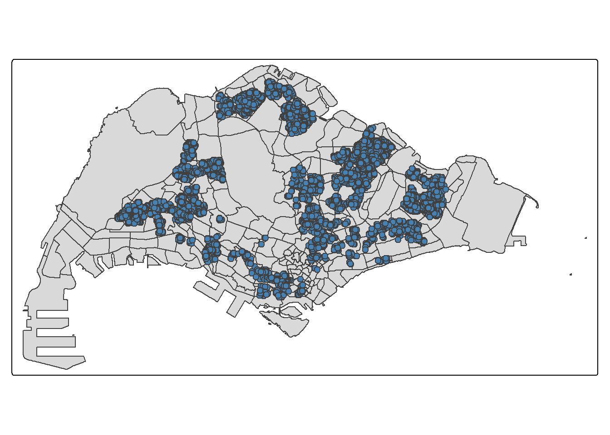
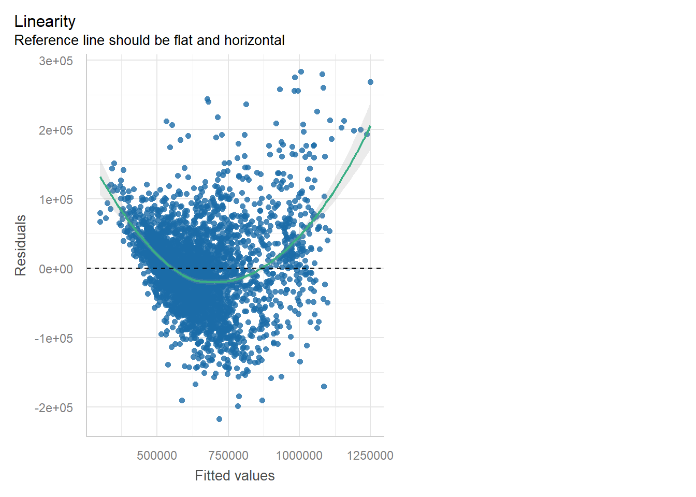
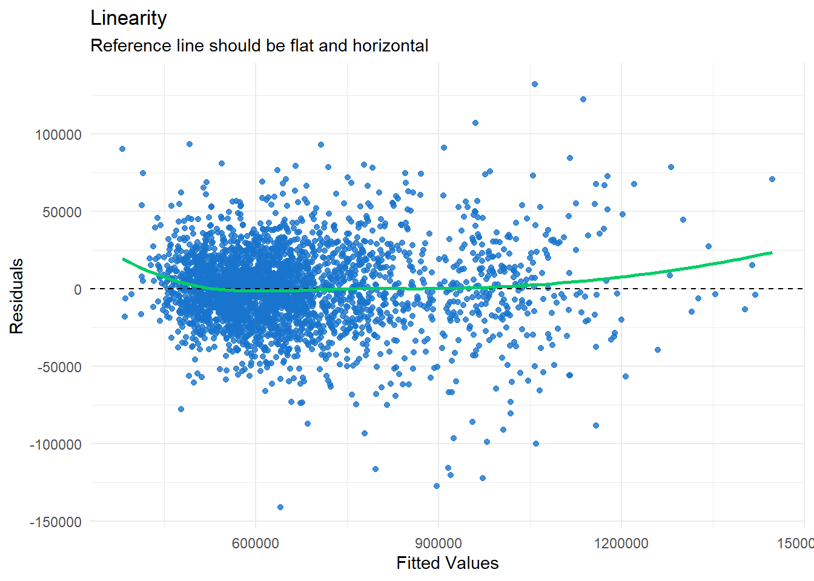
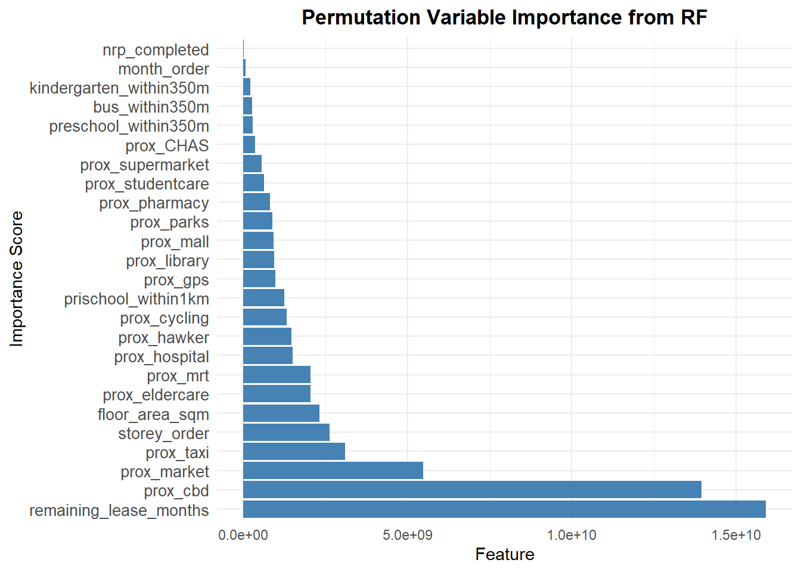
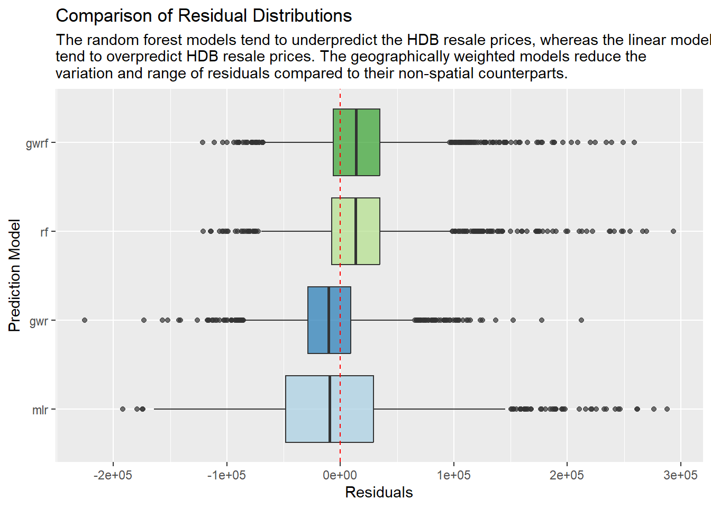
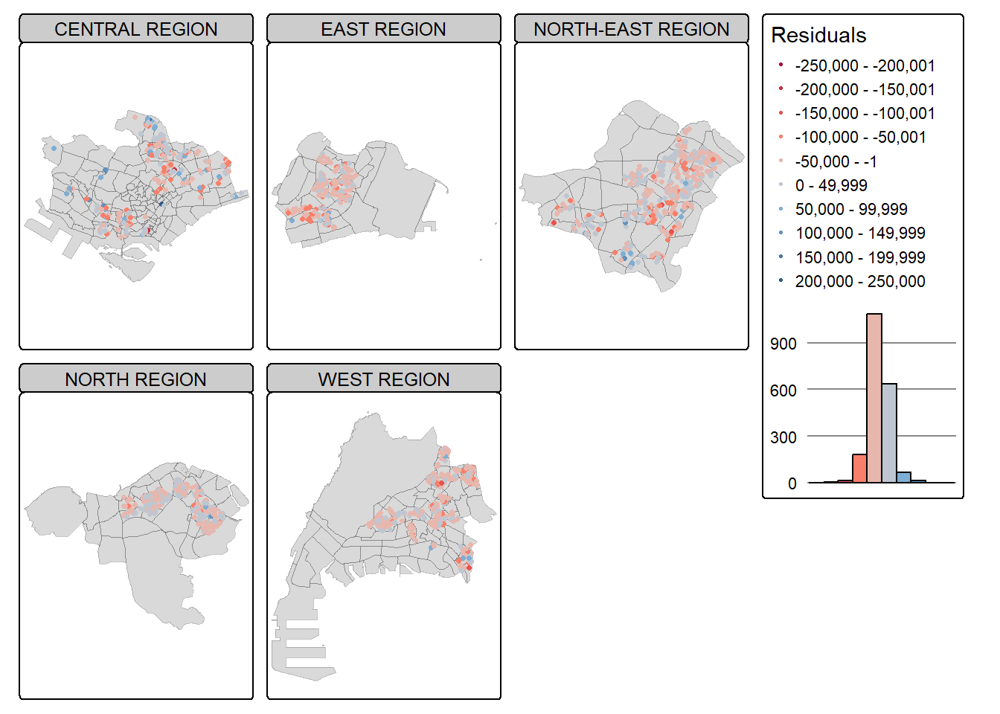
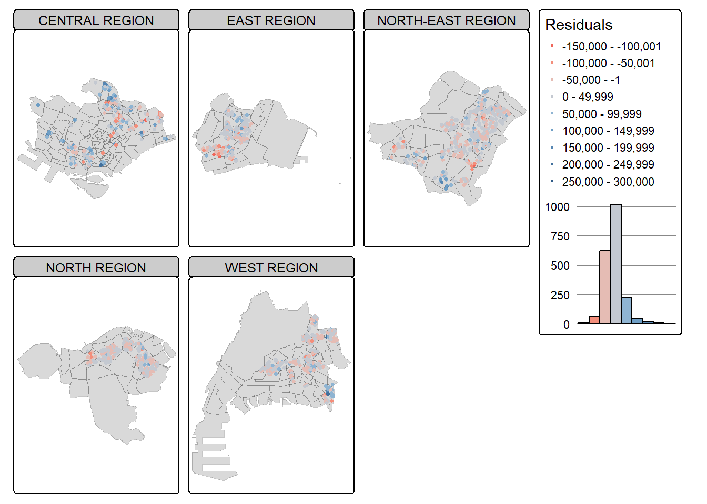
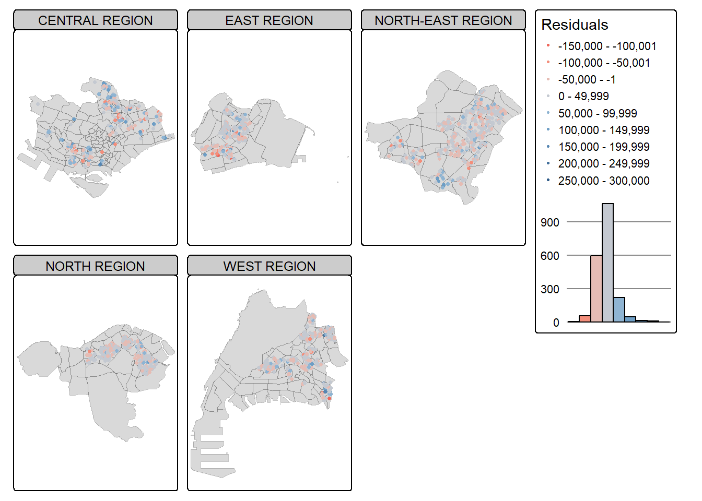

pacman::p_load(httr, tidyverse, sf, tmap, jsonlite, progress,
rsample, rvest, stringr, lubridate, patchwork,
DT, vtable, ggstatsplot, performance,
GWmodel, SpatialML, Metrics, spdep)Take Home Exercise 3: Predicting HDB Resale Prices
1 Overview
Housing is an essential component of household wealth worldwide. Purchasing a home has always represented a major investment for most individuals. The price of housing is influenced by a wide range of factors. Some are macro-level, such as the overall state of the economy or the inflation rate, while others are property-specific. These can be further categorized into structural and locational factors.
Structural factors refer to the characteristics of the property itself, such as size, fittings, and tenure. Locational factors, on the other hand, relate to the neighbourhood context of the property, including proximity to childcare centres, public transport, and shopping facilities. Lim (2022) also found that the year of transaction is one of the top variables affecting resale prices, indicating a strong temporal influence over the trend of resale prices. Some specific factors affecting resale prices in his study include distance to nature reserves, schools, taxi stops, hawkeer centres and MRT stations.
Traditionally, housing resale price models have been estimated using the Ordinary Least Squares (OLS) method. However, this approach does not account for spatial autocorrelation and spatial heterogeneity, which are commonly present in geographic datasets such as housing transactions. When spatial autocorrelation exists, OLS estimation of housing resale price models may produce biased, inconsistent, or inefficient results (Anselin, 1998). To address these limitations, Geographically Weighted Models (GWMs) have been introduced to more accurately calibrate both explanatory and predictive models for housing resale prices. For example, Geographically weighted random forest regression outperformed non-spatial machine learning models like Multiple Linear Regression (MLR), Partial Least Square Regression (PLSR), Support Vector Regression (SVR), Decision Tree Regression (DTR), and Random Forest Regression (RFR) in predicting corn crop yield (Khan, LI & Maimaitijiang, 2022)
1.1 Objective
In this exercise, we will models to predict HDB resale prices in Singapore for the period July to September 2025, using HDB resale transaction data from July 2024 to June 2025. In particular, we will compare the performance of a multiple linear regression model, a geographically weighted regression model, a random forest model and a geographically weighted regression model. This will allow us to analyse whether there is a benefit to incorporating spatial information for predicting HDB resale prices, and determine the best model for this purpose.
1.2 Data
The following datasets were utilised for this exercise:
| Dataset Name | Description | Source |
|---|---|---|
| Master Plan 2019 Subzone Boundary | Polygon feature data representing the boundaries of different areas in Singapore, specifically at the planning subzone level. | data.gov.sg |
| HDB Resale Flat Prices | HDB resale transacted prices in Singapore from Jan 2017 onwards. | data.gov.sg |
| Bus Stop Locations | Point feature data indicating the position of bus stops | LTA Datamall |
| MRT Station Exit | Point feature data indicating the position of MRT station exits | data.gov.sg |
| Cycling Path Network | Line feature data indicating the cycling paths from LTA and Town Council | data.gov.sg |
| Taxi Stop | Point feature data indicating locations of taxi stops in Singapore | data.gov.sg |
| Pre-Schools Location | Point feature data indicating location of pre-schools in Singapore (childcare centres and kindergartens) | data.gov.sg |
| Student Care Services | Point feature data indicating location of student care services in Singapore | data.gov.sg |
| Elder Care Services | Point feature data indicating location of elder care services in Singapore | data.gov.sg |
| CHAS Clinics | Point feature data indicating location of CHAS Clinics in Singapore | data.gov.sg |
| Eating Establishments | Point feature data indicating location of eating establishments in Singapore | data.gov.sg |
| Hawker Centres | Point feature data indicating location of hawker centres in Singapore | data.gov.sg |
| Hospitals | Point feature data indicating location of hospitals in Singapore | Kaggle |
| Libraries | Point feature data indicating location of libraries in Singapore | data.gov.sg |
| NEA Market and Food Centre | Point feature data indicating location of markets and food centres that are managed by NEA in Singapore | data.gov.sg |
| Parks | Polygon feature data indicating Managed Areas of Parks which are currently under the purview of NParks | data.gov.sg |
| Pharmacies | Point feature data indicating location of registered pharmacies in Singapore | data.gov.sg |
| Shopping Malls | Point feature data indicating location of shopping malls in Singapore | Kaggle |
| Supermarkets | Point feature data indicating location of supermarkets in Singapore | data.gov.sg |
| HDB Neighbourhood Renewal Programme Proposed and Under-Construction | Polygon feature data indicating location of Neighbourhood Renewal Programmes in Singapore | data.gov.sg |
1.3 R packages
The following R packages are necessary for this exercise
| Package | Use |
|---|---|
| tidyverse | Contains several core packages such as ggplot2 for data visualisation, dplyr for data manipulation, tidyr for tidying data and readr for data import from file formats like CSV |
| sf | Provides functions for processing and wrangling geospatial data |
| tmap | Provides functions for plotting cartographic quality thematic maps |
| httr | Allows HTTP calls to OneMap API |
| jsonlite | Reads json responses from web API to tibbular data frame |
| progress | Tracks computations |
| rvest | Provides functions to read HTML and extract elements with CSS selectors |
| stringr | Provides functions for manipulating string data easily |
| lubridate | Provides functions for working with Date type data |
| patchwork | Provides functions to combine ggplots into a single graphic |
| DT | Provides an R interface to the JavaScript library DataTables for creating interactive html tables |
| vtable | Provides function to generate a summary statistics table for a dataset |
| ggstatsplot | Provides function to visualise correlation matrix for a dataset |
| performance | Provides function to visually assess assumptions of statistical models |
| GWmodel | Provides functions to develop a geographically weighted regression model |
| SpatialML | Provides functions to develop a geographically weighted random forest model |
| Metrics | Provides function to evaluate model performance using RMSE |
The following code chunk loads in the above packages into the R environment.
2 Data preparation
2.1 Importing data
The following section imports the 25 datasets for this exercise using the relevant functions based on the origin file type, namely:
read_csv()for csv filesst_read()for KML/shp files
Spatial datasets were read in and converted to a sf dataframe using st_as_sf where necessary. The spatial datasets where also transformed to SVY21 coordinate reference system using st_transform(), for consistency across datasets. This allows us to perform visualisation, spatial analysis and distance computations later in our analysis. For datasets which include Z-coordinates, these coordinates were also dropped using st_zm() as our analysis will only require 2d spatial geometries. Finally, the datasets are plotted to check that the point/line/polygon features are contained within the boundaries of Singapore’s main island.
Additional data processing for specific datasets are specified within their tab.
mpsz<- st_read("data/MasterPlan2019SubzoneBoundaryNoSeaKML.kml") %>%
st_zm(drop = TRUE, what = "ZM") %>%
st_transform(crs = 3414)The following code chunk builds the function extract_kml_field, which allows us to parse HTML text to extract values associated with a data field in the text.
extract_kml_field <- function(html_text, field_name) {
if (is.na(html_text) || html_text == "") return(NA_character_)
page <- read_html(html_text)
rows <- page %>% html_elements("tr")
value <- rows %>%
keep(~ html_text2(html_element(.x, "th")) == field_name) %>%
html_element("td") %>%
html_text2()
if (length(value) == 0) NA_character_ else value
}Using the extract_kml_field function, the following code chunk extracts the relevant attribute information from the description field of mpsz, and filters the resulting sf dataframe to extract only the geometry associated with Singapore’s main island.
mpsz <- mpsz %>%
mutate(
REGION_N = map_chr(Description, extract_kml_field, "REGION_N"),
PLN_AREA_N = map_chr(Description, extract_kml_field, "PLN_AREA_N"),
SUBZONE_N = map_chr(Description, extract_kml_field, "SUBZONE_N")) %>%
select(-Name, -Description) %>%
relocate(geometry, .after = last_col())
mpsz <- mpsz %>%
filter(SUBZONE_N != "SOUTHERN GROUP",
PLN_AREA_N != "WESTERN ISLANDS",
PLN_AREA_N != "NORTH-EASTERN ISLANDS")
write_rds(mpsz, 'data/rds/mpsz.rds')This code chunk plots mpsz to check that it is in line with what we wanted.
mpsz<- read_rds('data/rds/mpsz.rds')
qtm(mpsz)
From mpsz we will also create a variable mpsz_sf which merges all connected polygons in mpsz. This will allow us to filter other variables to only point/polygon features within the boundary of Singapore’s main island, without accidentally removing points/polygons which cross internal boundaries.
mpsz_sf <- st_union(mpsz, by_feature = FALSE) %>%
st_as_sf()
qtm(mpsz_sf)
This dataset consists of aspatial data. The data was filtered for 4-room flats sold between July 2024 and September 2025, in line with the period of study for this exercise. This data will be geocoded in the next data processing step.
HDBresale <- read_csv("data/hdb/HDBresale.csv") %>%
filter(flat_type=="4 ROOM") %>%
filter(month >= "2024-07" & month <="2025-09")busstop <- st_read("data/transport/bus/BusStop.shp") %>%
st_transform(crs=3414)Reading layer `BusStop' from data source
`C:\clyerica\ISSS626-GAA\Take-home_Ex\Take-home_Ex03\data\transport\bus\BusStop.shp'
using driver `ESRI Shapefile'
Simple feature collection with 5172 features and 2 fields
Geometry type: POINT
Dimension: XY
Bounding box: xmin: 3970.122 ymin: 26482.1 xmax: 48285.52 ymax: 52983.82
Projected CRS: SVY21There are some bus stops which fall outside the borders of Singapore’s main island. The following code chunk uses st_join to join both sf objects by st_within, which will extract point features of only bus stops in Singapore. By using busstop as the first argument, we preserve the point layer (instead of the geometry column from mpsz).
busstop <- st_join(
busstop, mpsz_sf,
join=st_within, #returns TRUE for BusStop locations within the geometry of mpsz_sf
left=FALSE #remove rows without matches
) %>%
select(c("BUS_STOP_N", "geometry"))tmap_mode('plot')
qtm(mpsz)+
qtm(busstop, size = 0.5, fill='steelblue', add=TRUE)
mrt <- st_read('data/transport/LTAMRTStationExitKML.kml') %>%
st_transform(crs=3414) %>%
st_zm(drop = TRUE, what = "ZM") %>%
select(1,'geometry')Reading layer `MRT_EXITS' from data source
`C:\clyerica\ISSS626-GAA\Take-home_Ex\Take-home_Ex03\data\transport\LTAMRTStationExitKML.kml'
using driver `KML'
Simple feature collection with 563 features and 2 fields
Geometry type: POINT
Dimension: XYZ
Bounding box: xmin: 103.6368 ymin: 1.264972 xmax: 103.9893 ymax: 1.449157
z_range: zmin: 0 zmax: 0
Geodetic CRS: WGS 84qtm(mpsz)+
qtm(mrt, size = 0.5, fill='steelblue', add=TRUE)
cycling <- st_read('data/transport/CyclingPathNetworkKML.kml') %>%
st_transform(crs=3414) %>%
select(1,'geometry')Reading layer `CYCLINGPATH' from data source
`C:\clyerica\ISSS626-GAA\Take-home_Ex\Take-home_Ex03\data\transport\CyclingPathNetworkKML.kml'
using driver `KML'
Simple feature collection with 4265 features and 2 fields
Geometry type: MULTILINESTRING
Dimension: XY
Bounding box: xmin: 103.6882 ymin: 1.272643 xmax: 103.9663 ymax: 1.458944
Geodetic CRS: WGS 84qtm(mpsz)+
qtm(cycling, col='red', add=TRUE)
taxi <- st_read('data/transport/LTATaxiStopKML.kml') %>%
st_transform(crs=3414) %>%
st_zm(drop = TRUE, what = "ZM") %>%
select(1,'geometry')Reading layer `TAXISTOP' from data source
`C:\clyerica\ISSS626-GAA\Take-home_Ex\Take-home_Ex03\data\transport\LTATaxiStopKML.kml'
using driver `KML'
Simple feature collection with 366 features and 2 fields
Geometry type: POINT
Dimension: XYZ
Bounding box: xmin: 103.637 ymin: 1.26463 xmax: 103.9903 ymax: 1.458947
z_range: zmin: 0 zmax: 0
Geodetic CRS: WGS 84qtm(mpsz)+
qtm(taxi, size = 0.5, fill='steelblue', add=TRUE)
preschool <- st_read("data/family-facility/PreSchoolsLocation.kml")%>%
st_transform(crs=3414) %>%
st_zm(drop = TRUE, what = "ZM") %>%
select(1,'geometry')Reading layer `PRESCHOOLS_LOCATION' from data source
`C:\clyerica\ISSS626-GAA\Take-home_Ex\Take-home_Ex03\data\family-facility\PreSchoolsLocation.kml'
using driver `KML'
Simple feature collection with 2290 features and 2 fields
Geometry type: POINT
Dimension: XYZ
Bounding box: xmin: 103.6878 ymin: 1.247759 xmax: 103.9897 ymax: 1.462134
z_range: zmin: 0 zmax: 0
Geodetic CRS: WGS 84qtm(mpsz)+
qtm(preschool, size = 0.5, fill='steelblue', add=TRUE)
kindergartens <- st_read("data/family-facility/Kindergartens.kml") %>%
st_transform(crs=3414) %>%
st_zm(drop = TRUE, what = "ZM") %>%
select(1,'geometry')Reading layer `KINDERGARTENS' from data source
`C:\clyerica\ISSS626-GAA\Take-home_Ex\Take-home_Ex03\data\family-facility\Kindergartens.kml'
using driver `KML'
Simple feature collection with 448 features and 2 fields
Geometry type: POINT
Dimension: XYZ
Bounding box: xmin: 103.6887 ymin: 1.247759 xmax: 103.9717 ymax: 1.455452
z_range: zmin: 0 zmax: 0
Geodetic CRS: WGS 84qtm(mpsz)+
qtm(kindergartens, size = 0.5, fill='steelblue', add=TRUE)
childcare <- st_read("data/family-facility/ChildCareServices.kml") %>%
st_transform(crs=3414) %>%
st_zm(drop = TRUE, what = "ZM") %>%
select(1,'geometry')Reading layer `CHILDCARE' from data source
`C:\clyerica\ISSS626-GAA\Take-home_Ex\Take-home_Ex03\data\family-facility\ChildCareServices.kml'
using driver `KML'
Simple feature collection with 1925 features and 2 fields
Geometry type: POINT
Dimension: XYZ
Bounding box: xmin: 103.6878 ymin: 1.247759 xmax: 103.9897 ymax: 1.462134
z_range: zmin: 0 zmax: 0
Geodetic CRS: WGS 84qtm(mpsz)+
qtm(childcare, size = 0.5, fill='steelblue', add=TRUE)
Aside from reading in the data for primary schools, the following code chunk also filters the data to exclude non-primary schools from the dataset, such as secondary schools or high schools. The names were filtered by looking up each name online to confirm which were not primary schools.
This data will be geocoded in the next data processing step.
prischool <- read_csv('data/family-facility/Generalinformationofschools.csv')
prischool <- prischool %>%
filter(!str_detect(school_name, "SECONDARY", negate = FALSE),
(!str_detect(school_name, "JUNIOR COLLEGE", negate = FALSE)),
!school_name %in% c('ANGLO-CHINESE SCHOOL (BARKER ROAD)', 'ANGLO-CHINESE SCHOOL (INDEPENDENT)', 'ASSUMPTION ENGLISH SCHOOL', 'ASSUMPTION PATHWAY SCHOOL', 'CHIJ KATONG CONVENT', "CHIJ ST. JOSEPH'S CONVENT", "CHIJ ST. THERESA'S CONVENT", "CRESCENT GIRLS' SCHOOL", "GAN ENG SENG SCHOOL", "HAI SING CATHOLIC SCHOOL", "HWA CHONG INSTITUTION", "MILLENNIA INSTITUTE", "NORTHLIGHT SCHOOL", "RAFFLES INSTITUTION", "SCHOOL OF SCIENCE AND TECHNOLOGY, SINGAPORE", "SCHOOL OF THE ARTS, SINGAPORE", "SINGAPORE CHINESE GIRLS' SCHOOL", "SINGAPORE SPORTS SCHOOL", "ST ANDREW'S SCHOOL (JUNIOR)", "ST. JOSEPH'S INSTITUTION", "ST. PATRICK'S SCHOOL", "TANJONG KATONG GIRLS' SCHOOL","VICTORIA SCHOOL", "BUKIT PANJANG GOVT. HIGH SCHOOL", "CHUNG CHENG HIGH SCHOOL (MAIN)", "CHUNG CHENG HIGH SCHOOL (YISHUN)", "DUNMAN HIGH SCHOOL", "HOLY INNOCENTS' HIGH SCHOOL", "NAN CHIAU HIGH SCHOOL", "NAN HUA HIGH SCHOOL", "NANYANG GIRLS' HIGH SCHOOL", "NUS HIGH SCHOOL OF MATHEMATICS AND SCIENCE", "PRESBYTERIAN HIGH SCHOOL", "RIVER VALLEY HIGH SCHOOL", "ANGLICAN HIGH SCHOOL")) %>%
select(1,3)studentcare <- st_read("data/family-facility/StudentCareServicesKML.kml") %>%
st_transform(crs=3414) %>%
st_zm(drop = TRUE, what = "ZM") %>%
select(1,'geometry')Reading layer `STUDENTCARE' from data source
`C:\clyerica\ISSS626-GAA\Take-home_Ex\Take-home_Ex03\data\family-facility\StudentCareServicesKML.kml'
using driver `KML'
Simple feature collection with 386 features and 2 fields
Geometry type: POINT
Dimension: XYZ
Bounding box: xmin: 103.6876 ymin: 1.27474 xmax: 103.963 ymax: 1.456667
z_range: zmin: 0 zmax: 0
Geodetic CRS: WGS 84qtm(mpsz)+
qtm(studentcare, size = 0.5, fill='steelblue', add=TRUE)
eldercare <- st_read('data/family-facility/EldercareServicesKML.kml') %>%
st_transform(crs=3414) %>%
st_zm(drop = TRUE, what = "ZM") %>%
select(1,'geometry')Reading layer `ELDERCARE' from data source
`C:\clyerica\ISSS626-GAA\Take-home_Ex\Take-home_Ex03\data\family-facility\EldercareServicesKML.kml'
using driver `KML'
Simple feature collection with 133 features and 2 fields
Geometry type: POINT
Dimension: XYZ
Bounding box: xmin: 103.7119 ymin: 1.271472 xmax: 103.9561 ymax: 1.439561
z_range: zmin: 0 zmax: 0
Geodetic CRS: WGS 84qtm(mpsz)+
qtm(eldercare, size = 0.5, fill='steelblue', add=TRUE)
chas <- st_read('data/facilities/CHASClinics.kml') %>%
st_transform(crs=3414) %>%
st_zm(drop = TRUE, what = "ZM") %>%
select(1,'geometry')Reading layer `MOH_CHAS_CLINICS' from data source
`C:\clyerica\ISSS626-GAA\Take-home_Ex\Take-home_Ex03\data\facilities\CHASClinics.kml'
using driver `KML'
Simple feature collection with 1193 features and 2 fields
Geometry type: POINT
Dimension: XYZ
Bounding box: xmin: 103.5818 ymin: 1.016264 xmax: 103.9903 ymax: 1.456037
z_range: zmin: 0 zmax: 0
Geodetic CRS: WGS 84qtm(mpsz)+
qtm(chas, size = 0.5, fill='steelblue', add=TRUE)
food <- st_read("data/facilities/EatingEstablishments.kml") %>%
st_transform(crs=3414)%>%
st_zm(drop = TRUE, what = "ZM") %>%
select(1,'geometry')Reading layer `EATING_ESTABLISHMENTS' from data source
`C:\clyerica\ISSS626-GAA\Take-home_Ex\Take-home_Ex03\data\facilities\EatingEstablishments.kml'
using driver `KML'
Simple feature collection with 34378 features and 2 fields
Geometry type: POINT
Dimension: XYZ
Bounding box: xmin: 103.6113 ymin: 1.234038 xmax: 104.0222 ymax: 1.469795
z_range: zmin: 0 zmax: 0
Geodetic CRS: WGS 84There are some esting establishments which fall outside the borders of Singapore’s main island. The following code chunk uses st_join to join both sf objects by st_within, which will extract point features of establishments within Singapore’s main island.
food <- st_join(
food, mpsz_sf,
join=st_within,
left=FALSE
) %>%
select(c("Name", "geometry"))qtm(mpsz)+
qtm(food, size = 0.5, fill='steelblue', add=TRUE)
hawker <- st_read('data/facilities/HawkerCentresKML.kml') %>%
st_transform(crs=3414)%>%
st_zm(drop = TRUE, what = "ZM") %>%
select(1,'geometry')Reading layer `HAWKERCENTRE' from data source
`C:\clyerica\ISSS626-GAA\Take-home_Ex\Take-home_Ex03\data\facilities\HawkerCentresKML.kml'
using driver `KML'
Simple feature collection with 125 features and 2 fields
Geometry type: POINT
Dimension: XYZ
Bounding box: xmin: 103.6974 ymin: 1.272716 xmax: 103.9882 ymax: 1.449017
z_range: zmin: 0 zmax: 0
Geodetic CRS: WGS 84qtm(mpsz)+
qtm(hawker, size = 0.5, fill='steelblue', add=TRUE)
hospitals <- read_csv('data/facilities/hospitals_with_coordinates.csv') %>%
select(1,'latitude', 'longitude')
hospitals_sf <- st_as_sf(hospitals,
coords = c("longitude", "latitude"),
crs = 4326) %>%
st_transform(crs=3414)qtm(mpsz)+
qtm(hospitals_sf, size = 0.5, fill='steelblue', add=TRUE)
library <- st_read('data/facilities/Libraries.kml') %>%
st_transform(crs=3414)%>%
st_zm(drop = TRUE, what = "ZM") %>%
select(1,'geometry')Reading layer `LIBRARIES' from data source
`C:\clyerica\ISSS626-GAA\Take-home_Ex\Take-home_Ex03\data\facilities\Libraries.kml'
using driver `KML'
Simple feature collection with 27 features and 2 fields
Geometry type: POINT
Dimension: XYZ
Bounding box: xmin: 103.7045 ymin: 1.263922 xmax: 103.9494 ymax: 1.448197
z_range: zmin: 0 zmax: 0
Geodetic CRS: WGS 84qtm(mpsz)+
qtm(library, size = 0.5, fill='steelblue', add=TRUE)
market <- st_read('data/facilities/NEAMarketandFoodCentreKML.kml') %>%
st_transform(crs=3414)%>%
st_zm(drop = TRUE, what = "ZM") %>%
select(1,'geometry')Reading layer `MARKET_FOOD_CENTRE' from data source
`C:\clyerica\ISSS626-GAA\Take-home_Ex\Take-home_Ex03\data\facilities\NEAMarketandFoodCentreKML.kml'
using driver `KML'
Simple feature collection with 110 features and 2 fields
Geometry type: POINT
Dimension: XYZ
Bounding box: xmin: 103.7105 ymin: 1.272589 xmax: 103.9882 ymax: 1.443405
z_range: zmin: 0 zmax: 0
Geodetic CRS: WGS 84qtm(mpsz)+
qtm(market, size = 0.5, fill='steelblue', add=TRUE)
parks <- st_read('data/facilities/Parks.geojson') %>%
st_transform(crs=3414) %>%
select(1,'geometry')Reading layer `NPARKS_PARKS' from data source
`C:\clyerica\ISSS626-GAA\Take-home_Ex\Take-home_Ex03\data\facilities\Parks.geojson'
using driver `GeoJSON'
Simple feature collection with 450 features and 8 fields
Geometry type: MULTIPOLYGON
Dimension: XY
Bounding box: xmin: 103.6925 ymin: 1.262299 xmax: 104.0544 ymax: 1.46419
Geodetic CRS: WGS 84There are some parks which fall outside the borders of Singapore’s main island (for example, on Pulau Ubin or Pulau Sekudu). The following code chunk uses st_join to join both sf objects by st_within, which will extract only parks within Singapore’s main island.
parks <- st_join(
parks, mpsz_sf,
join=st_within,
left=FALSE
) %>%
select(c("OBJECTID_1", "geometry"))qtm(mpsz)+
qtm(parks, fill='steelblue', add=TRUE)
pharmacy <- st_read('data/facilities/RetailpharmacylocationsKML.KML') %>%
st_transform(crs=3414) %>%
st_zm(drop = TRUE, what = "ZM") %>%
select(1,'geometry')Reading layer `REGISTERED_PHARMACY' from data source
`C:\clyerica\ISSS626-GAA\Take-home_Ex\Take-home_Ex03\data\facilities\RetailpharmacylocationsKML.kml'
using driver `KML'
Simple feature collection with 269 features and 2 fields
Geometry type: POINT
Dimension: XYZ
Bounding box: xmin: 103.699 ymin: 1.2563 xmax: 104.0025 ymax: 1.448227
z_range: zmin: 0 zmax: 0
Geodetic CRS: WGS 84qtm(mpsz)+
qtm(pharmacy, size = 0.5, fill='steelblue', add=TRUE)
malls <- read_csv('data/facilities/singapore_malls_pois.csv') %>%
select(1,'lon', 'lat')
malls_sf <- st_as_sf(malls,
coords = c("lon", "lat"),
crs = 4326) %>%
st_transform(crs=3414)qtm(mpsz)+
qtm(malls_sf, size = 0.5, fill='steelblue', add=TRUE)
supermarket <- st_read('data/facilities/SupermarketsKML.KML') %>%
st_transform(crs=3414) %>%
st_zm(drop = TRUE, what = "ZM") %>%
select(1,'geometry')Reading layer `SUPERMARKETS' from data source
`C:\clyerica\ISSS626-GAA\Take-home_Ex\Take-home_Ex03\data\facilities\SupermarketsKML.kml'
using driver `KML'
Simple feature collection with 526 features and 2 fields
Geometry type: POINT
Dimension: XYZ
Bounding box: xmin: 103.6258 ymin: 1.24715 xmax: 104.0036 ymax: 1.461526
z_range: zmin: 0 zmax: 0
Geodetic CRS: WGS 84qtm(mpsz)+
qtm(supermarket, size = 0.5, fill='steelblue', add=TRUE)
nrp <- st_read('data/hdb/NRPKML.kml') %>%
st_transform(crs=3414) Reading layer `HDBNRPUNDERCONSTRUCTION' from data source
`C:\clyerica\ISSS626-GAA\Take-home_Ex\Take-home_Ex03\data\hdb\NRPKML.kml'
using driver `KML'
Simple feature collection with 35 features and 2 fields
Geometry type: MULTIPOLYGON
Dimension: XY
Bounding box: xmin: 103.6928 ymin: 1.282851 xmax: 103.9557 ymax: 1.445789
Geodetic CRS: WGS 84qtm(mpsz)+
qtm(nrp, fill='steelblue', add=TRUE)
2.2 Geocoding data
The following code chunk creates the function geocode(). The function takes in two string values and concatenates them to form an address which it then uses to query the OneMap API to retrieve latitude and longitude coordinates for that address.
geocode <- function(block, streetname) {
base_url="https://onemap.gov.sg/api/common/elastic/search"
address<- paste(block, streetname, sep=" ")
query <- list("searchVal" = address,
"returnGeom" = "Y",
"getAddrDetails" = "N",
"pageNum" = "1")
res <- GET(base_url, query = query)
restext <- content(res, as="text")
output <- fromJSON(restext) %>%
as.data.frame() %>%
select(results.LATITUDE, results.LONGITUDE)
return(output)
}THe following section geocodes the HDBresale and prischool datasets to include latitude and longitude columns for each entry in each respective dataset using the function geocode. The newly created latitude and longitude columns are then used to convert the dataframes to sf dataframes using st_as_sf(), and converts the coordinates to SVY21 projection using st_transform() for consistency with the other datasets. Finally, the dataset is visualised using qtm() to check that the datapoints all fall within Singapore’s main island for our analysis purposes.
The following code chunk amends ‘ST.’ in any strings under street_name of HDBresale to ‘SAINT’ to ensure it is not accidentally read as an abbreviation for ‘street’
HDBresale$street_name<-gsub(
"ST\\.", "SAINT",
HDBresale$street_name
)The next chunk creates columns ‘LATITUDE’ and ‘LONGITUDE’ in HDBresale with 0 values, then for each row replaces the values with the respective latitude and longitude coordinates of the address as retrieved from the OneMAP API.
HDBresale$LATITUDE <- 0
HDBresale$LONGITUDE <- 0
for (i in 1:nrow(HDBresale)){
temp_output <- geocode(HDBresale[i,4], HDBresale[i,5])
HDBresale$LATITUDE[i] <- temp_output$results.LATITUDE
HDBresale$LONGITUDE[i] <- temp_output$results.LONGITUDE
}
write_rds(HDBresale, "data/rds/HDBresale.rds")Using the newly derived coordinates, we then convert the data frame to an sf dataframe using st_as_sf() and convert the results to SVY21 projection with st_transform.
HDBresale<-read_rds('data/rds/HDBresale.rds')
HDBresale_sf <- st_as_sf(HDBresale,
coords = c("LONGITUDE", "LATITUDE"),
crs = 4326) %>%
st_transform(crs=3414)The following quick plot of HDBresale_sf confirms that we have prepared the data correctly and all datapoints are within the boundaries of mpsz
qtm(mpsz)+
qtm(HDBresale_sf, size = 0.5, fill='steelblue', add=TRUE)
The next chunk creates columns ‘LATITUDE’ and ‘LONGITUDE’ in prischool with 0 values, then for each row replaces the values with the respective latitude and longitude coordinates of the address as retrieved from the OneMAP API.
prischool$LATITUDE <- 0
prischool$LONGITUDE <- 0
for (i in 1:nrow(prischool)){
temp_output <- geocode(prischool[i,3],'')
prischool$LATITUDE[i] <- temp_output$results.LATITUDE
prischool$LONGITUDE[i] <- temp_output$results.LONGITUDE
}write_rds(prischool, 'data/rds/prischool.rds')Using the newly derived coordinates, we then convert the data frame to an sf dataframe using st_as_sf() and convert the results to SVY21 projection with st_transform.
prischool<-read_rds('data/rds/prischool.rds')
prischool_sf <- st_as_sf(prischool,
coords = c("LONGITUDE", "LATITUDE"),
crs = 4326) %>%
st_transform(crs=3414)The following quick plot of prischool_sf confirms that we have prepared the data correctly and all datapoints are within the boundaries of mpsz
qtm(mpsz)+
qtm(prischool_sf, size = 0.5, fill='steelblue', add=TRUE)
2.3 Preparing attribute data
In this section, we will perform feature engineering for each HDB resale datapoint. We will create structural attributes (factors attributable to the HDB flat itself), and locational attributes (factors dependent on proximity to certain amenities/facilities or on the availability of amenities/facilities within a certain distance, i.e., accessibility to that amenity/facility)
- Atructural attributes: the code to derive each are explained in its respective tab
- Proximity attributes: derived using
st_nearest feature(x,y)of sf package, which finds the nearest spatial feature inyfor each feature inx, andst_distance(x,y, by_element=TRUE)which calculates the distance between each corresponding row ofxandy. As the distance is returned in metres, the value is divided by 1000 to return the from the resold flatdistance to the nearest facility/amenity in kilometres. Refer to the figure below for how the shortest distance is calculated between different types of features. - Accessibility attributes: derived using
st_is_within_distance(x,y,dist)which returns a list of features fromxwhich a part of falls within a specified maximum distancedist(in metres) of a feature iny.map_int()from purr package from tidyverse is then used to applylength()to each list and count the number of features which falls within the specified distance of the resold flat.
Using ymd() from lubridate, we can convert the month column’s values into a Date object. We then find the number of months since the start of our study period until the sale date using interval() from lubridate.
HDBresale_sf <- HDBresale_sf %>%
mutate(
end_date = ymd(paste0(month, "-01")),
month_order = interval('2024-07-01', end_date) %/% months(1)
)As storey_range in HDBresale_sf is in string data type and will be treated as a categorical variable, we will perform ordinal encoding. First, we define a mapping vector to assign an integer value to each category in order of increasing storeys. Next the mapping is applies to the storey_range column in HDBresale_sf to create column storey_order.
storey_mapping <- c("01 TO 03" = 1, "04 TO 06" = 2, "07 TO 09" = 3,
"10 TO 12" = 4, "13 TO 15" = 5, "16 TO 18" = 6,
"19 TO 21" = 7, "22 TO 24" = 8, "25 TO 27" = 9,
"28 TO 30" = 10, "31 TO 33" = 11, "34 TO 36" = 12,
"37 TO 39" = 13, "40 TO 42" = 14, "43 TO 45" = 15,
"46 TO 48" = 16, "49 TO 51" = 17)
HDBresale_sf$storey_order <- storey_mapping[HDBresale_sf$storey_range]remaining_lease in HDBresale_sf is of string data type, and lists the number of years and months left in the lease. We separately extract the number of years and months, and use these to calculate the total number of months remaining in the lease at the time of sale.
HDBresale_sf <- HDBresale_sf %>%
mutate(
years = as.numeric(str_extract(remaining_lease, "^\\d+")),
months = as.numeric(str_extract(remaining_lease, "\\d+(?=\\s+month)")) %>%
replace_na(0),
remaining_lease_months = (years * 12) + months
) %>%
select(-c(years, months))HDBresale_sf <- HDBresale_sf %>%
mutate(
prox_mrt = as.numeric(
st_distance(geometry,
mrt[st_nearest_feature(
geometry, mrt), ],
by_element = TRUE)
)/1000
)HDBresale_sf <- HDBresale_sf %>%
mutate(
prox_cycling = as.numeric(
st_distance(geometry,
cycling[st_nearest_feature(
geometry, cycling), ],
by_element = TRUE)
)/1000
)HDBresale_sf <- HDBresale_sf %>%
mutate(
prox_taxi = as.numeric(
st_distance(geometry,
taxi[st_nearest_feature(
geometry, taxi), ],
by_element = TRUE)
)/1000
)The list of good primary schools (GPS) was determined based on the top 75 pprimary schools ranked by ratio of applicants to vacancies from MOE’s Phase 2B registration data as published by [creative campus](https://www.creativecampus.com.sg/best-primary-schools-in-singapore-2024.
GPS <- c("METHODIST GIRLS' SCHOOL (PRIMARY)", "TAO NAN SCHOOL", "AI TONG SCHOOL", "HOLY INNOCENTS' PRIMARY SCHOOL", "CHIJ ST. NICHOLAS GIRLS' SCHOOL", "ADMIRALTY PRIMARY SCHOOL", "ST. JOSEPH'S INSTITUTION JUNIOR", "CATHOLIC HIGH SCHOOL", "ANGLO-CHINESE SCHOOL (JUNIOR)", "CHONGFU SCHOOL", "KONG HWA SCHOOL", "ST. HILDA'S PRIMARY SCHOOL", "ANGLO-CHINESE SCHOOL (PRIMARY)", "NAN CHIAU PRIMARY SCHOOL", "NAN HUA PRIMARY SCHOOL", "NANYANG PRIMARY SCHOOL", "PEI HWA PRESBYTERIAN PRIMARY SCHOOL", "KUO CHUAN PRESBYTERIAN PRIMARY SCHOOL", "RULANG PRIMARY SCHOOL", "SINGAPORE CHINESE GIRLS' PRIMARY SCHOOL", "MARIS STELLA HIGH SCHOOL", "FAIRFIELD METHODIST SCHOOL (PRIMARY)", "SOUTH VIEW PRIMARY SCHOOL", "CHIJ PRIMARY (TOA PAYOH)", "HENRY PARK PRIMARY SCHOOL", "PEI CHUN PUBLIC SCHOOL", "XINMIN PRIMARY SCHOOL", "RED SWASTIKA SCHOOL", "ST. ANTHONY'S PRIMARY SCHOOL", "ROSYTH SCHOOL", "PAYA LEBAR METHODIST GIRLS' SCHOOL (PRIMARY)", "NORTHLAND PRIMARY SCHOOL", "PASIR RIS PRIMARY SCHOOL", "MEE TOH SCHOOL", "RADIN MAS PRIMARY SCHOOL", "CHIJ OUR LADY OF THE NATIVITY", "HORIZON PRIMARY SCHOOL","SENGKANG GREEN PRIMARY SCHOOL", "RAFFLES GIRLS' PRIMARY SCHOOL","MAHA BODHI SCHOOL", "ST. ANDREW'S JUNIOR SCHOOL", "KEMING PRIMARY SCHOOL","CHUA CHU KANG PRIMARY SCHOOL", "RIVER VALLEY PRIMARY SCHOOL","ANDERSON PRIMARY SCHOOL","GONGSHANG PRIMARY SCHOOL", "HONG WEN SCHOOL","BUKIT PANJANG PRIMARY SCHOOL", "ST. GABRIEL'S PRIMARY SCHOOL", "FRONTIER PRIMARY SCHOOL", "POI CHING SCHOOL", "CHIJ OUR LADY OF GOOD COUNSEL", "CANOSSA CATHOLIC PRIMARY SCHOOL", "HOUGANG PIRMARY SCHOOL", "WESTWOORD PRIMARY SCHOOL", "QIFA PRIMARY SCHOOL", "TEEMASEK PRIMARY SCHOOL","YU NENG PRIMARY SCHOOL", "ST. MARGARET'S SCHOOL (PRIMARY)", "TANJONG KATONG PRIMARY SCHOOL", "CANBERRA PRIMARY SCHOOL", "INNOVA PRIMARY SCHOOL", "WOODLANDS PRIMARY SCHOOL", "YANGZHENG PRIMARY SCHOOL", "MONTFORD JUNIOR SCHOOL", "RIVERVALE PRIMARY SCHOOL", "COMPASSVALE PRIMARY SCHOOL", "CHIJ (KATONG) PRIMARY", "ST. STEPHEN'S SCHOOL", "SHUQUN PRIMARY SCHOOL", "CHONGZHENG PRIMARY SCHOOL, CHIJ (KELLOCK)", "CHIJ OUR LADY QUEEN OF PEACE", "DE LA SALLE SCHOOL")
gps_sf <- prischool_sf %>%
filter(school_name %in% GPS)
HDBresale_sf <- HDBresale_sf %>%
mutate(
prox_gps = as.numeric(
st_distance(geometry,
gps_sf[st_nearest_feature(
geometry, gps_sf), ],
by_element = TRUE)
)/1000
)HDBresale_sf <- HDBresale_sf %>%
mutate(
prox_studentcare = as.numeric(
st_distance(geometry,
studentcare[st_nearest_feature(
geometry, studentcare), ],
by_element = TRUE)/1000 #divide by 1000 to get measurement in km
)
)HDBresale_sf <- HDBresale_sf %>%
mutate(
prox_eldercare = as.numeric(
st_distance(geometry,
eldercare[st_nearest_feature(
geometry, eldercare), ],
by_element = TRUE)
)/1000
)For the purposes of this exercise, we will define the central business district as the ‘Downtown Core’ planning area as delineated in the 2019 Master Plan Subzone Boundary. Using st_union, we will merge it into a single polygon feature.
cbd <- mpsz %>%
filter(PLN_AREA_N=="DOWNTOWN CORE")%>%
st_union()HDBresale_sf <- HDBresale_sf %>%
mutate(
prox_cbd = as.numeric(
st_distance(geometry,
cbd[st_nearest_feature(
geometry, cbd), ],
by_element = TRUE)
)/1000
)HDBresale_sf <- HDBresale_sf %>%
mutate(
prox_CHAS = as.numeric(
st_distance(geometry,
chas[st_nearest_feature(
geometry, chas), ],
by_element = TRUE)
)/1000
)HDBresale_sf <- HDBresale_sf %>%
mutate(
prox_hawker = as.numeric(
st_distance(geometry,
hawker[st_nearest_feature(
geometry, hawker), ],
by_element = TRUE)
)/1000
)HDBresale_sf <- HDBresale_sf %>%
mutate(
prox_hospital = as.numeric(
st_distance(geometry,
hospitals_sf[st_nearest_feature(
geometry, hospitals_sf), ],
by_element = TRUE)
)/1000
)HDBresale_sf <- HDBresale_sf %>%
mutate(
prox_library = as.numeric(
st_distance(geometry,
library[st_nearest_feature(
geometry, library), ],
by_element = TRUE)
)/1000
)HDBresale_sf <- HDBresale_sf %>%
mutate(
prox_market = as.numeric(
st_distance(geometry,
market[st_nearest_feature(
geometry, market), ],
by_element = TRUE)
)/1000
)HDBresale_sf <- HDBresale_sf %>%
mutate(
prox_parks = as.numeric(
st_distance(geometry,
parks[st_nearest_feature(
geometry, parks), ],
by_element = TRUE)
)/1000
)HDBresale_sf <- HDBresale_sf %>%
mutate(
prox_pharmacy = as.numeric(
st_distance(geometry,
pharmacy[st_nearest_feature(
geometry, pharmacy), ],
by_element = TRUE)
)/1000
)HDBresale_sf <- HDBresale_sf %>%
mutate(
prox_mall = as.numeric(
st_distance(geometry,
malls_sf[st_nearest_feature(
geometry, malls_sf), ],
by_element = TRUE)
)/1000
)HDBresale_sf <- HDBresale_sf %>%
mutate(
prox_supermarket = as.numeric(
st_distance(geometry,
supermarket[st_nearest_feature(
geometry, supermarket), ],
by_element = TRUE)
)/1000
)bs_within_350m <- st_is_within_distance(
HDBresale_sf, busstop, dist=350) #measurement is in meters
HDBresale_sf <- HDBresale_sf %>%
mutate(bus_within350m = map_int(bs_within_350m, length))within_350m <- st_is_within_distance(
HDBresale_sf, preschool, dist=350)
HDBresale_sf <- HDBresale_sf %>%
mutate(preschool_within350m = map_int(within_350m, length))k_within_350m <- st_is_within_distance(
HDBresale_sf, kindergartens, dist=350) #measurement is in meters
HDBresale_sf <- HDBresale_sf %>%
mutate(kindergarten_within350m = map_int(k_within_350m, length))c_within_350m <- st_is_within_distance(
HDBresale_sf, childcare, dist=350) #measurement is in meters
HDBresale_sf <- HDBresale_sf %>%
mutate(childcare_within350m = map_int(c_within_350m, length))p_within_1km <- st_is_within_distance(
HDBresale_sf, prischool_sf, dist=1000) #measurement is in meters
HDBresale_sf <- HDBresale_sf %>%
mutate(prischool_within1km = map_int(p_within_1km, length))f_within_350m <- st_is_within_distance(
HDBresale_sf, food, dist=350) #measurement is in meters
HDBresale_sf <- HDBresale_sf %>%
mutate(foodestablishments_within350m = map_int(f_within_350m, length))nrp_sf <- nrp %>%
mutate(
address = map_chr(Description, extract_kml_field, "NAME"),
est_cmpltn = map_chr(Description, extract_kml_field, "ESTMT_CNSTRN_CMPLTN")
) %>%
select(-Name, -Description) %>%
mutate(
quarter_num = as.numeric(str_extract(est_cmpltn, "^\\d")),
year_num = str_extract(est_cmpltn, "\\d{4}$"),
end_month = case_when(
quarter_num == 1 ~ "03", # Q1 ends in March
quarter_num == 2 ~ "06", # Q2 ends in June
quarter_num == 3 ~ "09", # Q3 ends in September
quarter_num == 4 ~ "12", # Q4 ends in December
TRUE ~ NA_character_
),
cmpltn_date = paste0(year_num, "-", end_month)
) %>%
# Select the original column and the final date object
select(address, cmpltn_date, geometry)HDBresale_sf <- HDBresale_sf %>%
st_join(nrp_sf %>% select(cmpltn_date, geometry),
join = st_intersects,
left = TRUE) %>%
mutate(
nrp_completed = case_when(
!is.na(cmpltn_date) & (month > cmpltn_date) ~ 1,
TRUE ~ 0
)
) %>%
select(-cmpltn_date)2.4 Cleaning up table
The following code chunk cleans up the HDBresale_sf dataframe to only the attributes of interest for our analysis in this exercise. This makes the data more readable and is more storage efficient.
HDBresale_sf <- HDBresale_sf %>%
select(resale_price, floor_area_sqm, month_order, storey_order,
remaining_lease_months, prox_mrt, prox_cycling,
prox_taxi, prox_studentcare, prox_gps, prox_eldercare, prox_cbd,
prox_CHAS, prox_hawker,
prox_hospital, prox_library, prox_market, prox_parks,
prox_pharmacy, prox_mall, prox_supermarket,
bus_within350m, preschool_within350m,
kindergarten_within350m, childcare_within350m,
prischool_within1km, nrp_completed)
write_rds(HDBresale_sf, 'data/rds/HDBresale_sf.rds')We then examine the summary statistics of the table to check there are no issues with our dataset such as missing or negative values.
Code
HDBresale_sf <- read_rds('data/rds/HDBresale_sf.rds')
HDBresale_sf %>%
st_drop_geometry()%>%
sumtable()| Variable | N | Mean | Std. Dev. | Min | Pctl. 25 | Pctl. 75 | Max |
|---|---|---|---|---|---|---|---|
| resale_price | 14737 | 661081 | 157596 | 300000 | 552000 | 713888 | 1518000 |
| floor_area_sqm | 14737 | 95 | 6.7 | 74 | 92 | 100 | 135 |
| month_order | 14737 | 6.9 | 4.5 | 0 | 3 | 11 | 14 |
| storey_order | 14737 | 3.4 | 2.1 | 1 | 2 | 4 | 17 |
| remaining_lease_months | 14737 | 919 | 169 | 485 | 753 | 1084 | 1144 |
| prox_mrt | 14737 | 0.59 | 0.38 | 0.022 | 0.29 | 0.8 | 2.1 |
| prox_cycling | 14737 | 0.46 | 0.49 | 0.0085 | 0.11 | 0.64 | 2.4 |
| prox_taxi | 14737 | 0.76 | 0.46 | 0.023 | 0.4 | 1 | 2.6 |
| prox_studentcare | 14737 | 0.34 | 0.23 | 0.00000014 | 0.18 | 0.43 | 1.9 |
| prox_gps | 14737 | 0.87 | 0.52 | 0.044 | 0.48 | 1.2 | 2.8 |
| prox_eldercare | 14737 | 0.82 | 0.63 | 0.00000043 | 0.34 | 1.1 | 3.3 |
| prox_cbd | 14737 | 11 | 4.5 | 0 | 7.9 | 14 | 19 |
| prox_CHAS | 14737 | 0.19 | 0.11 | 0.0000000072 | 0.11 | 0.24 | 0.81 |
| prox_hawker | 14737 | 0.77 | 0.51 | 0.033 | 0.38 | 1 | 2.9 |
| prox_hospital | 14737 | 2.1 | 1.3 | 0.076 | 1.2 | 2.7 | 6.6 |
| prox_library | 14737 | 1.2 | 0.57 | 0.056 | 0.81 | 1.6 | 3 |
| prox_market | 14737 | 2.1 | 1.6 | 0.034 | 0.62 | 3 | 6.7 |
| prox_parks | 14737 | 0.58 | 0.37 | 0.006 | 0.31 | 0.76 | 2 |
| prox_pharmacy | 14737 | 0.68 | 0.36 | 0.032 | 0.41 | 0.9 | 2.3 |
| prox_mall | 14737 | 0.62 | 0.34 | 0.03 | 0.36 | 0.82 | 2.3 |
| prox_supermarket | 14737 | 0.3 | 0.18 | 0.00000026 | 0.18 | 0.39 | 1.4 |
| bus_within350m | 14737 | 8 | 2.9 | 0 | 6 | 10 | 19 |
| preschool_within350m | 14737 | 5.5 | 2.8 | 0 | 3 | 7 | 25 |
| kindergarten_within350m | 14737 | 0.93 | 1.1 | 0 | 0 | 1 | 8 |
| childcare_within350m | 14737 | 4.7 | 2.3 | 0 | 3 | 6 | 22 |
| prischool_within1km | 14737 | 3.1 | 1.5 | 0 | 2 | 4 | 9 |
| nrp_completed | 14737 | 0.028 | 0.17 | 0 | 0 | 0 | 1 |
2.5 Creating train/test data sets
We will train our predictive models using HDB resale transaction data from July 2024 to June 2025, to predict resale prices from July to September 2025. We will also select 3000 data points from the training period as training data, and 2000 data points from the test period to perform prediction on. We need to downsample the size of the dataset as GWmodel, which will be used later to create a geographically weighted model for predicting resale prices, struggles with extremely large datasets, and HDBresale_sf has over 14,000 datapoints.
The following code chunk splits the dataset into training and test data sets.
set.seed(1234)
HDB_train <- HDBresale_sf %>%
filter(month_order<=11) %>%
sample_n(3000)
HDB_test <- HDBresale_sf %>%
filter(month_order>11) %>%
sample_n(2000)
write_rds(HDB_train, 'data/rds/HDB_train.rds')
write_rds(HDB_test, 'data/rds/HDB_test.rds')Code
HDB_train <- read_rds('data/rds/HDB_train.rds')
HDB_test <- read_rds('data/rds/HDB_test.rds')2.5.1 Removing overlapping points from training data
GWmodel does not allow overlapping point features in model calibration, as these overlapping features will cause issues in the local calibration of the model. As seen below, there are 1362 overlapping points in our training data.
overlapping_points<- HDB_train %>%
mutate(overlap=lengths(st_equals(., .))>1)
sum(overlapping_points$overlap)[1] 1362The code chunk below uses st_jitter of sf package to move point features by 1m in a random direction, to avoid overlapping point features
set.seed(1234)
HDB_train<-HDB_train %>%
st_jitter(amount=1)Now, we can check that there are no longer any overlapping points in our training data
overlapping_points<- HDB_train %>%
mutate(overlap=lengths(st_equals(., .))>1)
sum(overlapping_points$overlap)[1] 03 Exploratory Data Analysis
In this section, we will perform exploratory data analysis to understand the distributions of the variables in our training dataset.
The distribution of resale prices from July 2024 to June 2025 displays a prominent right skew, with most 4-room resale flats being sold for below around $720,000. Notably, prices of 4-room flat HDB resales in the North region are consistently on the lower end of the scale, while other regions have a larger upper limit of HDB resale prices. On the other hand, many of the highest priced resale flats (over around $1,100,000) are concentrated in the central region.
Code
HDBresale_region <- st_join(
x = HDB_test, # The layer you want to keep all attributes for
y = mpsz["REGION_N"], # The layer you want to get attributes from (only REGION_N)
join = st_within, # Specifies a 'points in polygon' join
left = TRUE # Ensures all original points are kept, even if they fall outside a polygon
)
tm_shape(mpsz) +
tm_polygons(col_alpha = 0.3)+
tm_facets(by = "REGION_N",
nrow = 2,
ncols = 3,
free.coords=TRUE,
drop.units=TRUE) +
tm_shape(HDBresale_region, group = "REGION_N")+
tm_dots(fill='resale_price',
fill.scale = tm_scale_intervals(style = "jenks",
values = "brewer.greens"),
fill.legend = tm_legend(),
fill.chart = tm_chart_histogram())+
tm_facets(by = "REGION_N",
nrow = 2,
ncols = 3,
free.coords=TRUE,
drop.units=TRUE)
The following observations can be made from the histogram of floor area, storey order, and remaining number of months in the lease.
- The distribution of
floor_area_sqmappears to approximate a normal distribution, ranging between around 70 to 135sqm. Most flats sold are between 90 and 100sqm. storey_orderdistribution displays a right skews, most flats sold were from the 1st to 15th storey.- There is no consistent pattern in the distribution of
remaining_lease_months.
Code
structural_factors <- c( "floor_area_sqm", "storey_order", "remaining_lease_months")
plots <- lapply(structural_factors, function(v) {
ggplot(HDB_train, aes(x = .data[[v]])) +
geom_histogram(bins = 15, color = "black", fill = "lightblue") +
labs(title = v, x = NULL, y = NULL) +
theme_minimal() +
theme(
plot.title = element_text(size = 9, hjust = 0.5),
axis.text = element_text(size = 6)
)
})
EDA_structural <- wrap_plots(plots, ncol = 4) +
plot_annotation(title = "EDA of Structural Factors")
EDA_structural
Generally, most variables display a right skew, indicating most facilities/amenities are relatively close to the HDB resale flats. The only variables which do not display a right skew is prox_cbd, which displays a left skew, indicating most resale flats are located relatively further away from the central business district, and prox_library, which more closely approximates a normal distribution.
Code
proximity_factors <- c("prox_mrt", "prox_cycling",
"prox_taxi", "prox_studentcare", "prox_gps",
"prox_eldercare", "prox_cbd","prox_CHAS", "prox_hawker",
"prox_hospital", "prox_library", "prox_market",
"prox_parks","prox_pharmacy", "prox_mall", "prox_supermarket"
)
plots <- lapply(proximity_factors, function(v) {
ggplot(HDB_test, aes(x = .data[[v]])) +
geom_histogram(bins = 20, color = "black", fill = "lightblue") +
labs(title = v, x = NULL, y = NULL) +
theme_minimal() +
theme(
plot.title = element_text(size = 9, hjust = 0.5),
axis.text = element_text(size = 6)
)
})
EDA_proximity <- wrap_plots(plots, ncol = 4) +
plot_annotation(title = "EDA of Proximity Factors")
EDA_proximity
Most factors show a slight right skew in distribution. Notably, very few resold flats meet the condition of having completed their neighbourhood renewal programme.
Code
access_factors <- c("bus_within350m", "preschool_within350m",
"kindergarten_within350m", "childcare_within350m",
"prischool_within1km", "nrp_completed")
plots <- lapply(access_factors, function(v) {
ggplot(HDB_test, aes(x = .data[[v]])) +
geom_histogram(bins = 10, color = "black", fill = "lightblue") +
labs(title = v, x = NULL, y = NULL) +
theme_minimal() +
theme(
plot.title = element_text(size = 9, hjust = 0.5),
axis.text = element_text(size = 6)
)
})
EDA_access <- wrap_plots(plots, ncol = 3) +
plot_annotation(title = "EDA of Factors related to Accessibility")
EDA_access
4 Computing Correlation matrix
Highly correlated prediction variables will provide redundant information to the prediction models and will make it difficult to determine the contribution of either variable to the prediction value. In this section we will compute the correlation matrix to identify and remove highly correlated variables using ggcormat() from ggstatsplot package.
HDB_train_nogeo <- HDB_train %>%
st_drop_geometry()
ggcorrmat(HDB_train_nogeo[, 2:27],
names(HDB_train_nogeo[, 2:27]),
output='plot',
type='upper',
lab=TRUE#,
#colors = c("darkorange", "white", "forestgreen")
)
The number of childcare centres (childcare_within350m) and preschools (preschool_within350m) within 350m of the resale flats are highly correlated (absolute value>0.8). Between the two, we will use preschool_within350m for our subsequent analysis.
5 Non Spatial Multiple Linear Regression
In this section, we will calibrate a non-spatial multiple linear regression model to predict HDB resale prices using lm() from stats package.
5.1 Calibrate multiple linear regression model
Code
price_mlr <- lm(resale_price ~ floor_area_sqm + month_order +
storey_order + remaining_lease_months +
prox_mrt + prox_cycling + prox_taxi +
prox_studentcare + prox_gps + prox_eldercare +
prox_cbd + prox_CHAS + prox_hawker +
prox_hospital + prox_library + prox_market +
prox_parks + prox_pharmacy + prox_mall +
prox_supermarket + bus_within350m +
preschool_within350m + kindergarten_within350m +
prischool_within1km + nrp_completed,
data=HDB_train)
summary(price_mlr)
Call:
lm(formula = resale_price ~ floor_area_sqm + month_order + storey_order +
remaining_lease_months + prox_mrt + prox_cycling + prox_taxi +
prox_studentcare + prox_gps + prox_eldercare + prox_cbd +
prox_CHAS + prox_hawker + prox_hospital + prox_library +
prox_market + prox_parks + prox_pharmacy + prox_mall + prox_supermarket +
bus_within350m + preschool_within350m + kindergarten_within350m +
prischool_within1km + nrp_completed, data = HDB_train)
Residuals:
Min 1Q Median 3Q Max
-222287 -38488 -1278 34520 279217
Coefficients:
Estimate Std. Error t value Pr(>|t|)
(Intercept) -52621.47 21815.86 -2.412 0.01592 *
floor_area_sqm 4279.94 180.77 23.676 < 2e-16 ***
month_order 3163.00 317.16 9.973 < 2e-16 ***
storey_order 16631.11 568.12 29.274 < 2e-16 ***
remaining_lease_months 572.79 8.62 66.452 < 2e-16 ***
prox_mrt -35461.65 4228.26 -8.387 < 2e-16 ***
prox_cycling -17245.31 2768.65 -6.229 5.36e-10 ***
prox_taxi -56773.17 3709.44 -15.305 < 2e-16 ***
prox_studentcare -43722.61 5937.05 -7.364 2.29e-13 ***
prox_gps 22501.16 2525.22 8.911 < 2e-16 ***
prox_eldercare -12093.48 2167.79 -5.579 2.64e-08 ***
prox_cbd -17069.91 358.73 -47.584 < 2e-16 ***
prox_CHAS -3707.13 11619.51 -0.319 0.74972
prox_hawker 23374.15 2970.62 7.868 4.98e-15 ***
prox_hospital 14270.58 1201.10 11.881 < 2e-16 ***
prox_library 2046.88 2380.30 0.860 0.38990
prox_market -27335.67 1255.30 -21.776 < 2e-16 ***
prox_parks -10337.02 3392.31 -3.047 0.00233 **
prox_pharmacy -9882.57 4074.68 -2.425 0.01535 *
prox_mall -18425.15 3995.49 -4.611 4.17e-06 ***
prox_supermarket -22364.77 7114.93 -3.143 0.00169 **
bus_within350m 191.68 448.82 0.427 0.66935
preschool_within350m 1031.15 597.54 1.726 0.08451 .
kindergarten_within350m 691.04 1507.52 0.458 0.64670
prischool_within1km -1793.82 1160.21 -1.546 0.12218
nrp_completed 1373.12 6926.48 0.198 0.84287
---
Signif. codes: 0 '***' 0.001 '**' 0.01 '*' 0.05 '.' 0.1 ' ' 1
Residual standard error: 61320 on 2974 degrees of freedom
Multiple R-squared: 0.8518, Adjusted R-squared: 0.8506
F-statistic: 683.8 on 25 and 2974 DF, p-value: < 2.2e-16Based on the above, we can see that prox_CHAS , prox_library , kindergarten_within350m, and all accessibility factors are insignificant predictor variables (p-value>0.05). To avoid issues with overfitting by using unnecessary predictor variables, we will remove these variables from linear regression prediction models in this exercise. The following code chunk calibrates a multiple linear regression model with the reduced variables.
Code
price_mlr <- lm(resale_price ~ floor_area_sqm + month_order +
storey_order + remaining_lease_months +
prox_mrt + prox_cycling + prox_taxi +
prox_studentcare + prox_gps + prox_eldercare +
prox_cbd + prox_hawker +
prox_hospital + prox_market +
prox_parks + prox_pharmacy + prox_mall +
prox_supermarket,
data = HDB_train)
summary(price_mlr)
Call:
lm(formula = resale_price ~ floor_area_sqm + month_order + storey_order +
remaining_lease_months + prox_mrt + prox_cycling + prox_taxi +
prox_studentcare + prox_gps + prox_eldercare + prox_cbd +
prox_hawker + prox_hospital + prox_market + prox_parks +
prox_pharmacy + prox_mall + prox_supermarket, data = HDB_train)
Residuals:
Min 1Q Median 3Q Max
-217254 -38364 -1305 34159 283383
Coefficients:
Estimate Std. Error t value Pr(>|t|)
(Intercept) -58174.320 19745.329 -2.946 0.003242 **
floor_area_sqm 4336.255 177.781 24.391 < 2e-16 ***
month_order 3167.084 316.569 10.004 < 2e-16 ***
storey_order 16697.479 567.421 29.427 < 2e-16 ***
remaining_lease_months 576.339 8.309 69.360 < 2e-16 ***
prox_mrt -35587.209 4182.129 -8.509 < 2e-16 ***
prox_cycling -16300.266 2705.502 -6.025 1.90e-09 ***
prox_taxi -56020.292 3636.017 -15.407 < 2e-16 ***
prox_studentcare -45068.096 5672.040 -7.946 2.71e-15 ***
prox_gps 23687.621 2314.740 10.233 < 2e-16 ***
prox_eldercare -11397.328 2143.653 -5.317 1.13e-07 ***
prox_cbd -17124.855 348.581 -49.127 < 2e-16 ***
prox_hawker 24292.049 2901.730 8.372 < 2e-16 ***
prox_hospital 14573.395 1114.467 13.077 < 2e-16 ***
prox_market -28003.380 1054.250 -26.562 < 2e-16 ***
prox_parks -10592.379 3337.570 -3.174 0.001521 **
prox_pharmacy -9293.946 4015.244 -2.315 0.020699 *
prox_mall -18124.257 3808.178 -4.759 2.04e-06 ***
prox_supermarket -25314.489 6722.388 -3.766 0.000169 ***
---
Signif. codes: 0 '***' 0.001 '**' 0.01 '*' 0.05 '.' 0.1 ' ' 1
Residual standard error: 61360 on 2981 degrees of freedom
Multiple R-squared: 0.8513, Adjusted R-squared: 0.8504
F-statistic: 947.8 on 18 and 2981 DF, p-value: < 2.2e-165.2 Checking linearity assumption
Multiple linear regression assumes that there is a linear relationship between predictor variables and the predicted variable. The following code chunk uses check_model() from performance package to visualise the residual plot from our calibrated multiple linear regresssion model.
check_model(price_mlr,
check = "linearity")
The plot shows that the model tends to underpredict the HDB resale flat prices at especially low or especially high prices. This may indicate that the relationship between predictor variables and price is non-linear, hence we expect that this model will perform poorly to predict resale prices.
5.3 Prediction
The following code chunk utilises predict() from stats package to generate predictions for the test data using the calibrated multiple linear regression model. We also create HDB_test_p to store the predictions under column mlr_pred.
mlr_pred <- predict(price_mlr,
newdata=HDB_test)
mlr_pred_vec <- as.vector(mlr_pred)
HDB_test_p<- HDB_test %>%
select(resale_price) %>%
mutate(mlr_pred = mlr_pred_vec)5.4 RMSE calculation
mlr_rmse<- Metrics::rmse(HDB_test_p$resale_price,
mlr_pred_vec)
mlr_rmse[1] 66109.56 Geographically Weighted Regression
In this section, we will calibrate a geographically weighted regression model to account for spatial autocorrelation using GWmodel package.
6.1 Compute adaptive bandwidth for train data
First, we will use bw.gwr() of GWmodel package and cross-validation method (‘CV’) to determine the optimal adaptive bandwidth for our model. We will use adaptive bandwidth as the HDB resale data points are not uniformly distributed over our study area of Singapore. This will allow more for a more consistent sample size for each local model.
bw_adaptive <- bw.gwr(
formula = resale_price ~ floor_area_sqm + month_order +
storey_order + remaining_lease_months +
prox_mrt + prox_cycling + prox_taxi +
prox_studentcare + prox_gps + prox_eldercare +
prox_cbd + prox_hawker +
prox_hospital + prox_market +
prox_parks + prox_pharmacy + prox_mall +
prox_supermarket,
data=HDB_train,
approach="CV",
kernel="gaussian",
adaptive=TRUE,
longlat=FALSE
)
write_rds(bw_adaptive, "data/rds/bw_adaptive.rds")bw_adaptive <- read_rds("data/rds/bw_adaptive.rds")
bw_adaptive[1] 27From this, we find that 27 neighbouring points is the optimal adaptive bandwidth to be used.
6.2 Calibrate GWR model
Next, the following code chunk calibrates the gwr-based model using the optimal adaptive bandwidth and Gaussian kernel. We also utilise the same predictor variables for the MLR model above, to allow us to directly compare the performance between geographically weighted versus non-spatial linear regression models.
gwr_adaptive <- gwr.basic(
formula = resale_price ~ floor_area_sqm + month_order +
storey_order + remaining_lease_months +
prox_mrt + prox_cycling + prox_taxi +
prox_studentcare + prox_gps + prox_eldercare +
prox_cbd + prox_hawker +
prox_hospital + prox_market +
prox_parks + prox_pharmacy + prox_mall +
prox_supermarket,
data=HDB_train,
bw= bw_adaptive,
kernel = 'gaussian',
adaptive=TRUE,
longlat = FALSE)
write_rds(gwr_adaptive, "data/rds/gwr_adaptive.rds")gwr_adaptive <- read_rds("data/rds/gwr_adaptive.rds")
gwr_adaptive ***********************************************************************
* Package GWmodel *
***********************************************************************
Program starts at: 2025-11-16 13:15:20.851726
Call:
gwr.basic(formula = resale_price ~ floor_area_sqm + month_order +
storey_order + remaining_lease_months + prox_mrt + prox_cycling +
prox_taxi + prox_studentcare + prox_gps + prox_eldercare +
prox_cbd + prox_hawker + prox_hospital + prox_market + prox_parks +
prox_pharmacy + prox_mall + prox_supermarket, data = HDB_train,
bw = bw_adaptive, kernel = "gaussian", adaptive = TRUE, longlat = FALSE)
Dependent (y) variable: resale_price
Independent variables: floor_area_sqm month_order storey_order remaining_lease_months prox_mrt prox_cycling prox_taxi prox_studentcare prox_gps prox_eldercare prox_cbd prox_hawker prox_hospital prox_market prox_parks prox_pharmacy prox_mall prox_supermarket
Number of data points: 3000
***********************************************************************
* Results of Global Regression *
***********************************************************************
Call:
lm(formula = formula, data = data)
Residuals:
Min 1Q Median 3Q Max
-217254 -38364 -1305 34159 283383
Coefficients:
Estimate Std. Error t value Pr(>|t|)
(Intercept) -58174.320 19745.329 -2.946 0.003242 **
floor_area_sqm 4336.255 177.781 24.391 < 2e-16 ***
month_order 3167.084 316.569 10.004 < 2e-16 ***
storey_order 16697.479 567.421 29.427 < 2e-16 ***
remaining_lease_months 576.339 8.309 69.360 < 2e-16 ***
prox_mrt -35587.209 4182.129 -8.509 < 2e-16 ***
prox_cycling -16300.266 2705.502 -6.025 1.90e-09 ***
prox_taxi -56020.292 3636.017 -15.407 < 2e-16 ***
prox_studentcare -45068.096 5672.040 -7.946 2.71e-15 ***
prox_gps 23687.621 2314.740 10.233 < 2e-16 ***
prox_eldercare -11397.328 2143.653 -5.317 1.13e-07 ***
prox_cbd -17124.855 348.581 -49.127 < 2e-16 ***
prox_hawker 24292.049 2901.730 8.372 < 2e-16 ***
prox_hospital 14573.395 1114.467 13.077 < 2e-16 ***
prox_market -28003.380 1054.250 -26.562 < 2e-16 ***
prox_parks -10592.379 3337.570 -3.174 0.001521 **
prox_pharmacy -9293.946 4015.244 -2.315 0.020699 *
prox_mall -18124.257 3808.178 -4.759 2.04e-06 ***
prox_supermarket -25314.489 6722.388 -3.766 0.000169 ***
---Significance stars
Signif. codes: 0 '***' 0.001 '**' 0.01 '*' 0.05 '.' 0.1 ' ' 1
Residual standard error: 61360 on 2981 degrees of freedom
Multiple R-squared: 0.8513
Adjusted R-squared: 0.8504
F-statistic: 947.8 on 18 and 2981 DF, p-value: < 2.2e-16
***Extra Diagnostic information
Residual sum of squares: 1.122475e+13
Sigma(hat): 61188.88
AIC: 74681.95
AICc: 74682.24
BIC: 71962.21
***********************************************************************
* Results of Geographically Weighted Regression *
***********************************************************************
*********************Model calibration information*********************
Kernel function: gaussian
Adaptive bandwidth: 27 (number of nearest neighbours)
Regression points: the same locations as observations are used.
Distance metric: Euclidean distance metric is used.
****************Summary of GWR coefficient estimates:******************
Min. 1st Qu. Median 3rd Qu.
Intercept -9.7361e+08 -5.6393e+05 -1.3836e+05 4.0184e+05
floor_area_sqm -1.0010e+04 2.4303e+03 3.3492e+03 5.1777e+03
month_order -2.0189e+02 2.8124e+03 3.5755e+03 4.4304e+03
storey_order 4.8753e+03 1.1750e+04 1.4123e+04 1.6305e+04
remaining_lease_months -3.8542e+02 3.5362e+02 4.6700e+02 6.8172e+02
prox_mrt -3.8820e+08 -1.1666e+05 -3.7854e+04 1.3643e+04
prox_cycling -1.7306e+06 -6.6692e+04 -2.8491e+04 6.1970e+03
prox_taxi -9.5094e+07 -1.3823e+05 -4.2112e+04 3.1726e+04
prox_studentcare -5.1017e+07 -3.4983e+04 -3.6493e+02 3.3608e+04
prox_gps -5.7327e+07 -4.1182e+04 -2.1871e+03 3.6985e+04
prox_eldercare -2.2316e+08 -2.5829e+04 1.6574e+04 5.1320e+04
prox_cbd -1.2141e+07 -3.8830e+04 -2.9085e+03 4.6782e+04
prox_hawker -7.8980e+08 -5.8925e+04 1.3600e+03 6.6667e+04
prox_hospital -8.8655e+08 -4.3645e+04 -3.4626e+01 5.2507e+04
prox_market -5.5967e+08 -1.1253e+05 -1.9854e+04 1.0550e+05
prox_parks -9.9718e+08 -4.0065e+04 -1.7666e+03 2.7390e+04
prox_pharmacy -1.9459e+06 -6.1516e+04 -7.5459e+02 7.2962e+04
prox_mall -5.8236e+07 -6.4953e+04 -1.2867e+04 2.6702e+04
prox_supermarket -5.1008e+08 -5.6198e+04 -2.3107e+03 4.6199e+04
Max.
Intercept 171720446
floor_area_sqm 690764
month_order 26339
storey_order 24414
remaining_lease_months 20880
prox_mrt 54518529
prox_cycling 231309044
prox_taxi 593993574
prox_studentcare 214623288
prox_gps 594709136
prox_eldercare 791627752
prox_cbd 523844800
prox_hawker 142700791
prox_hospital 346473555
prox_market 733645711
prox_parks 2741241
prox_pharmacy 364824367
prox_mall 172958782
prox_supermarket 744115
************************Diagnostic information*************************
Number of data points: 3000
Effective number of parameters (2trace(S) - trace(S'S)): 910.5821
Effective degrees of freedom (n-2trace(S) + trace(S'S)): 2089.418
AICc (GWR book, Fotheringham, et al. 2002, p. 61, eq 2.33): 71243.5
AIC (GWR book, Fotheringham, et al. 2002,GWR p. 96, eq. 4.22): 70003.56
BIC (GWR book, Fotheringham, et al. 2002,GWR p. 61, eq. 2.34): 72218.49
Residual sum of squares: 1.866168e+12
R-square value: 0.97527
Adjusted R-square value: 0.9644874
***********************************************************************
Program stops at: 2025-11-16 13:15:26.258485 6.3 Checking linearity assumption
Multiple linear regression assumes that there is a linear relationship between predictor variables and the predicted variable. The following code chunk uses yhat and residual from the gwr_adaptive$SDF output to visualise the residual plot of the geographically weighted regression model using ggplot functions.
gwr_plot_data <- gwr_adaptive$SDF%>%
select(yhat, residual)
ggplot(gwr_plot_data, aes(x = yhat, y = residual)) +
geom_point(color = "dodgerblue3", alpha = 0.8) +
geom_hline(yintercept = 0, color = "black", linetype = "dashed") +
geom_smooth(method = "loess", se = FALSE, color = "springgreen3") +
labs(
title = "Linearity",
subtitle = "Reference line should be flat and horizontal",
x = "Fitted Values",
y = "Residuals"
) +
theme_minimal()
Compared to the residuals plot for the multiple linear regression model, we can observe that the residuals are more randomly distributed around 0. As such, this model satisfies the linearity assumption.
6.4 Prediction
Next, gwr.predict() of GWmodel package is used to compute the predicted values of HDB_test. The results are again stored in HDB_test_p under column gwr_pred.
gwr_pred <- gwr.predict(
formula = resale_price ~ floor_area_sqm + month_order +
storey_order + remaining_lease_months + prox_mrt +
prox_cycling + prox_taxi + prox_studentcare +
prox_gps + prox_eldercare + prox_cbd + prox_hawker +
prox_hospital + prox_market + prox_parks +
prox_pharmacy + prox_mall + prox_supermarket +
bus_within350m + preschool_within350m,
data=HDB_train,
predictdata = HDB_test,
bw=bw_adaptive,
kernel = 'gaussian',
adaptive=TRUE,
longlat = FALSE)
write_rds(gwr_pred,
"data/rds/gwr_pred.rds")gwr_pred <- read_rds('data/rds/gwr_pred.rds')
gwr_pred_df <- as.data.frame(gwr_pred$SDF)
HDB_test_p<- cbind(HDB_test_p, gwr_pred_df$prediction) %>%
rename(gwr_pred = gwr_pred_df.prediction) 6.5 RMSE Calculation
gwr_rmse <- Metrics::rmse(HDB_test$resale_price,
HDB_test_p$gwr_pred)
gwr_rmse[1] 36604.457 Random Forest
Next, we will calibrate a random forest model to predict HDB resale prices using the random forest function of ranger package.
7.1 Preparing train and test data
The code chunk below extracts the x and y coordinates of the training and test data sets.
coords_train <- st_coordinates(HDB_train)
coords_test <- st_coordinates(HDB_test)
write_rds(coords_train, 'data/rds/coords_train.rds')
write_rds(coords_test, 'data/rds/coords_test.rds')Using st_drop_geometry() , we remove the geometry column from the train and test data sets as ranger does not take sf objects
HDB_train_nogeom <- HDB_train %>%
st_drop_geometry()
HDB_test_nogeom <- HDB_test %>%
st_drop_geometry()7.2 Initial non-spatial random forest model
The following code chunk calibrates a random forest model using all possible variables from our dataset. We set the argument importance to ‘permutation’, which will compute the importance of each predictive variable based on their effect on prediction importance.
set.seed(1234)
rf <- ranger(
formula = resale_price ~ floor_area_sqm + month_order +
storey_order + remaining_lease_months + prox_mrt +
prox_cycling + prox_taxi + prox_studentcare +
prox_gps + prox_eldercare + prox_cbd + prox_CHAS +
prox_hawker + prox_hospital + prox_library +
prox_market + prox_parks + prox_pharmacy + prox_mall +
prox_supermarket + bus_within350m + preschool_within350m +
kindergarten_within350m + prischool_within1km +
nrp_completed,
data=HDB_train_nogeom,
importance='permutation')
write_rds(rf, "data/rds/rf.rds")rf <- read_rds("data/rds/rf.rds")
rfRanger result
Call:
ranger(formula = resale_price ~ floor_area_sqm + month_order + storey_order + remaining_lease_months + prox_mrt + prox_cycling + prox_taxi + prox_studentcare + prox_gps + prox_eldercare + prox_cbd + prox_CHAS + prox_hawker + prox_hospital + prox_library + prox_market + prox_parks + prox_pharmacy + prox_mall + prox_supermarket + bus_within350m + preschool_within350m + kindergarten_within350m + prischool_within1km + nrp_completed, data = HDB_train_nogeom, importance = "permutation")
Type: Regression
Number of trees: 500
Sample size: 3000
Number of independent variables: 25
Mtry: 5
Target node size: 5
Variable importance mode: permutation
Splitrule: variance
OOB prediction error (MSE): 1834172413
R squared (OOB): 0.9271064 7.3 Variable Importance Analysis
Next, we will conduct variable importance analysis to prune the number of variables used for our random forest model (and the geographically weighted random forest model later). This can help improve model prediction performance by avoiding addition of noise by including less relevant predictor variables, as well as improve training and prediction time as the process will be less computationally expensive with fewer variables.
The following code chunk extracts the variable importance scores from the random forest model into a data frame, and arranges the data in order of descending importance for later visualisation.
rf_importance_scores <- data.frame(
Feature = names(rf$variable.importance),
Importance = rf$variable.importance
) %>%
arrange(desc(Importance)) %>%
mutate(Feature = factor(Feature, levels = Feature))Below, we can view the importance of each variable both as a plot and as an interactive data table, which allows us to sort results by importance.
Code
ggplot(rf_importance_scores, aes(x = Importance, y = Feature)) +
geom_col(fill = "steelblue") +
labs(
title = "Permutation Variable Importance from RF",
x = "Feature",
y = "Importance Score"
) +
theme_minimal() +
theme(
plot.title = element_text(hjust = 0.5, face = "bold"),
axis.text.y = element_text(size = 10)
)
datatable(rf_importance_scores, rownames = FALSE)%>%
formatRound(columns = 'Importance', digits = 2)Based on the above analysis, we will choose the top 10 important variables for our random forest models.
7.4 Calibrated RF model
The following code chunk calibrates a new random forest model with the chosen variables.
set.seed(1234)
rf_c <- ranger(
formula = resale_price ~ remaining_lease_months + prox_cbd + prox_market + prox_taxi + storey_order + floor_area_sqm + prox_eldercare + prox_mrt + prox_hospital + prox_hawker,
data=HDB_train_nogeom,
importance='permutation')
write_rds(rf_c, "data/rds/rf_c.rds")rf_c <- read_rds("data/rds/rf_c.rds")
rf_cRanger result
Call:
ranger(formula = resale_price ~ remaining_lease_months + prox_cbd + prox_market + prox_taxi + storey_order + floor_area_sqm + prox_eldercare + prox_mrt + prox_hospital + prox_hawker, data = HDB_train_nogeom, importance = "permutation")
Type: Regression
Number of trees: 500
Sample size: 3000
Number of independent variables: 10
Mtry: 3
Target node size: 5
Variable importance mode: permutation
Splitrule: variance
OOB prediction error (MSE): 1689591108
R squared (OOB): 0.9328523 7.5 Predictions
Next, predict() of ranger package is used to compute the predicted values of HDB_test. The results are stored in HDB_test_p under column rf_pred.
rf_pred <- predict(rf_c, data=HDB_test_nogeom)
rf_pred_df <- as.data.frame(rf_pred)
write_rds(rf_pred_df, "data/rds/rf_pred_df")rf_pred_df<- read_rds("data/rds/rf_pred_df")
HDB_test_p<- cbind(HDB_test_p, rf_pred_df$prediction) %>%
rename(rf_pred = rf_pred_df.prediction) 7.6 RMSE Calculation
rf_rmse <- Metrics::rmse(HDB_test_p$resale_price,
HDB_test_p$rf_pred)
rf_rmse[1] 46685.918 Geographically Weighted Random Forest Model
In this section, we will calibrate a geographically weighted random forest model using the SpatialML package.
8.1 Compute adaptive bandwidth
Similar to the GWR model, we will compute the optimal bandwidth using the grf.bw() from SpatialML package. This function uses an exhaustive approach to find the optimal bandwidth for the geographically weighted random forest algorithm. As it uses an exhaustive approach, we will sample 10 possible bandwidths from 300 to 600, using a step value of 30. This approximately corresponds with using about 1.5% to 20% of the training dataset as the bandwidth for each point.
coords_train <- read_rds('data/rds/coords_train.rds')
grf_bw <- grf.bw(
formula = resale_price ~ remaining_lease_months + prox_cbd + prox_market + prox_taxi + storey_order + floor_area_sqm + prox_eldercare + prox_mrt + prox_hospital + prox_hawker,
dataset=HDB_train_nogeom,
coords=coords_train,
bw.min =300,
bw.max = 601 ,
step = 30,
kernel='adaptive' )
write_rds(grf_bw, 'data/rds/grf_bw.rds')grf_bw <- read_rds('data/rds/grf_bw.rds')
grf_bw$tested.bandwidths
Bandwidth Local Mixed Low.Local
1 300 0.9255546 0.9398248 0.9403127
2 330 0.9243247 0.9392318 0.9399840
3 360 0.9252399 0.9395672 0.9400852
4 390 0.9236375 0.9389302 0.9401212
5 420 0.9254002 0.9394259 0.9401520
6 450 0.9267613 0.9402198 0.9407846
7 480 0.9252975 0.9386587 0.9392405
8 510 0.9262002 0.9398363 0.9404807
9 540 0.9257511 0.9396365 0.9402902
10 570 0.9256943 0.9393653 0.9401410
11 600 0.9266345 0.9396050 0.9399177
$Best.BW
[1] 450From the above, 450 is calculated to be the optimal bandwidth amongst the range tested.
8.2 Create geographically weighted random forest model
Next, the following code chunk calibrates the gwrf-based model using the calculated optimal adaptive bandwidth. We utilise the same predictor variables for the random forest model above, to allow us to directly compare the performance between geographically weighted versus non-spatial random forest models.
set.seed(1234)
coords_train <- read_rds('data/rds/coords_train.rds')
gwrf_adaptive <- grf(
formula = resale_price ~ floor_area_sqm + storey_order + remaining_lease_months + prox_mrt + prox_taxi + prox_eldercare + prox_cbd + prox_hospital + prox_market + bus_within350m,
dframe=HDB_train_nogeom,
bw=450,
kernel="adaptive",
coords=coords_train)write_rds(gwrf_adaptive, "data/rds/gwrf_adaptive.rds")
write_rds(gwrf_adaptive$LocalModelSummary,"data/rds/gwrf_lmodel.rds")We will only read in the local model summary of the geographically weighted random forest model as the full rds is very large (~ 15GB).
gwrf_lmodel<- read_rds("data/rds/gwrf_lmodel.rds")
print(gwrf_lmodel)$l.VariableImportance
Min Max Mean StD
floor_area_sqm 93535313468 2.569992e+12 5.839117e+11 5.774340e+11
storey_order 89233962480 3.703436e+12 7.504863e+11 9.853220e+11
remaining_lease_months 329175543664 9.590521e+12 2.501815e+12 2.903663e+12
prox_mrt 69466960715 3.315283e+12 4.648449e+11 6.584182e+11
prox_taxi 84762380818 2.723452e+12 3.943237e+11 3.504111e+11
prox_eldercare 52450187800 1.423325e+12 3.060631e+11 3.131976e+11
prox_cbd 84210840332 3.306967e+12 5.747461e+11 6.780757e+11
prox_hospital 53378291529 2.506419e+12 3.286653e+11 3.530948e+11
prox_market 68907073277 1.362838e+12 3.171736e+11 2.253018e+11
bus_within350m 23730505877 4.749141e+11 1.080029e+11 1.005465e+11
$l.MSE.OOB
[1] 1862942671
$l.r.OOB
[1] 0.9259383
$l.MSE.Pred
[1] 66119362
$l.r.Pred
[1] 0.99737148.3 Predictions
Next, predict.grf() of SpatialML package is used to compute the predicted values of HDB_test. The results are stored in HDB_test_p under column gwrf_pred.
coords_test <- read_rds('data/rds/coords_test.rds')
HDB_test_nogeom <- cbind(
HDB_test_nogeom, coords_test) gwrf_pred <- predict.grf(gwrf_adaptive,
HDB_test_nogeom,
x.var.name="X",
y.var.name="Y",
local.w=1,
global.w=0)
gwrf_pred <- write_rds(gwrf_pred, "data/rds/gwrf_pred.rds")gwrf_pred <- read_rds("data/rds/gwrf_pred.rds")
HDB_test_p<- cbind(HDB_test_p, gwrf_pred) 8.4 RMSE Calculation
gwrf_rmse <- Metrics::rmse(HDB_test_p$resale_price,
HDB_test_p$gwrf_pred)
gwrf_rmse[1] 43336.439 Evaluation of models
In this section, we will evaluate the performance of the 4 models used to predict prices of 4-room HDB flats from July to September 2025.
9.1 RMSE comparison
The following code chunk creates a dataframe with the respective models and their RMSE values and displays it in an interactive datatable which allows sorting by RMSE.
Code
rmse_results <- data.frame(
Model = c("Multiple Linear Regression",
"Geographically Weighted Regression",
"Random Forest",
"Geographically Weighted Random Forest"),
RMSE = c(mlr_rmse,
gwr_rmse,
rf_rmse,
gwrf_rmse)
)
datatable(rmse_results)%>%
formatRound(columns = 'RMSE', digits = 2)From the table above, both geographically weighted models outperformed their non-spatial counterparts. However, the geographically weighted regression model outperformed all models with the lowest RMSE of around $36,000. Multiple linear regression performed the worst with an RMSE of around $66,000. As observed earlier, the geographically weighted regression model satisfied the linearity assumption after accounting for spatial autocorrelation, whereas the multiple linear regression model. This may explain the drastic improvement in RMSE scores between the two models.
Another observation to note is that the geographically weighted random forest model did not improve the RMSE from its non-spatial counterpart as drastically as the geographically weighted regression model. A possible explanation is that the bandwidth used for the geographically weighted random forest model may be suboptimal. The true optimal bandwidth may be beyond the range of bandwidths tested in this exercise. The step size between bandwidths tested was also large (30), which also increases the possibility that the bandwidth chosen was not the true optimal bandwidth for the model.
Finally, it is also interesting to note that the between non-spatial models, the random forest model outperformed the multiple linear regression model despite having fewer predictive variables. This again highlights how the relationship between price and the predictive variables does not seem to be linear, which the random forest model is able to capture more effectively at the global level.
9.2 Visualising Residuals
The following code chunk calculates the residuals for each data point in the test data, and builds a boxplot to visualise the distribution of residuals of each model.
Code
residuals<- HDB_test_p %>%
mutate(mlr=resale_price-mlr_pred,
gwr=resale_price-gwr_pred,
rf=resale_price-rf_pred,
gwrf=resale_price-gwrf_pred)
residuals_long <- residuals %>%
pivot_longer(
cols = c(mlr, gwr, rf, gwrf),
names_to = "Model",
values_to = "Residuals"
) %>%
mutate(
Model = factor(Model, levels = c("mlr", "gwr", "rf", "gwrf"))
)
ggplot(residuals_long, aes(x = Model, y = Residuals, fill = Model)) +
geom_boxplot(
trim = TRUE,
alpha = 0.7
) +
scale_fill_brewer(palette="Paired") +
geom_hline(yintercept = 0, linetype = "dashed", color = "red", linewidth = 0.5) +
coord_flip() +
labs(
title = "Comparison of Residual Distributions",
subtitle = "The random forest models tend to underpredict the HDB resale prices, whereas the linear models \ntend to overpredict HDB resale prices. The geographically weighted models reduce the \nvariation and range of residuals compared to their non-spatial counterparts.",
x = "Prediction Model",
y = "Residuals",
fill = "Model"
) +
theme_gray() +
theme(legend.position = "none") 
The next code chunk also builds separate qq plots for each model, ensuring they are displayed with the same y-axis scale for comparison purposes.
Code
ggplot(residuals_long, aes(x = resale_price, y = Residuals, color = Model)) +
geom_point(alpha = 0.5, size = 1) +
scale_color_brewer(palette="Paired") +
geom_hline(yintercept = 0, linetype = "dashed", color = "black") +
geom_smooth(se = FALSE, method = "loess", color = "darkred") +
facet_wrap(~ Model, scales = "free_x") +
labs(
title = "Residuals vs. Price",
subtitle="All models show a systemic tendency to underpredict the prices of higher-valued resale flats. \nThis is especially prominent in the multiple linear model and least prominent in the \ngeographically weighted regression model. The random forest models behave quite \nsimilarly.",
x = "HDB Resale Price",
y = "Residuals"
) +
theme_minimal() +
theme(legend.position = "none")
9.3 Spatial Distribution of Residuals
Finally, we will observe the spatial distribution of residuals in each region of Singapore for each model. The code chunk below uses st_join() of sf package to add the REGION_N from mpsz to each datapoint, checking for which region that data point is inside of by using st_within as the join.
residuals_region <- st_join(
x = residuals_long,
y = mpsz["REGION_N"],
join = st_within,
left = TRUE
)Next, the following code chunk creates a function to filter the residuals_region by the type of model and plots a thematic map for each to view the spatial distribution of residuals by region for that model.
get_residual_map <- function(model){
sf <- residuals_region %>%
filter(Model==model)
map <- tm_shape(mpsz) +
tm_polygons(col_alpha = 0.3)+
tm_facets(by = "REGION_N",
nrow = 2,
ncols = 3,
free.coords=TRUE,
drop.units=TRUE) +
tm_shape(sf, group = "REGION_N")+
tm_dots(fill='Residuals',
fill.scale = tm_scale_intervals(
style = "pretty",
n=12,
values = "tableau.red_blue_diverging"),
fill.chart=tm_chart_histogram())+
tm_facets(by = "REGION_N",
nrow = 2,
ncols = 3,
free.coords=TRUE,
drop.units=TRUE)
return(map)
} get_residual_map('mlr')
get_residual_map('gwr')
get_residual_map('rf')
get_residual_map('gwrf')
The largest absolute values of residuals from the multiple linear regresssion model appears to be concentrated in the central region. Visually, the underpredicted and overpredicted values within each region appear to show some spatial clustering as well.
For the geographically weighted regression model, unlike the multiple linear regression, there is not a single region where the larger absolute values of residuals appear to be concentrated. The spatial distribution of residuals appears more random.
There is a slight concentration of very underpredicted values in the central region for the non-spatial random forest model, which is mitigated in the geographically weighted random forest model. Otherwise, there is not much visible difference between the spatial distributions of residuals for the two random forest models. This is not unsurprising given the improvement from the random forest model in terms of RMSE and overall distribution of residual values by incorporating spatial weighting was quite slight.
9.4 Global Moran’s I test on residuals
In this section, we will conduct Global Moran’s I test on the residuals of each model to test for spatial autocorrelation.
The following code chunk builds the function to perform the following:
- filters
residuals_longfor the residuals of the model of interest and selects only the residuals column and the geometry column to create sf objectsf - use
spatial jitterst_jitter()to avoid overlapping points insf` - converts
sffrom an sf object to sp object usingas_Spatial() - defines neighbour list
nbusing k-nearest neighbours. The value of k will be dependent on the adaptive bandwidth used for the geographically-weighted version of each model. - creates row standardised weights matrix for neighbour list based using
nb2listw(style='W') - returns the result of global morans test using function
moran.test()
get_moransI <- function(modelname, k){
set.seed(1234)
sf <- residuals_long %>%
filter(Model==modelname)%>%
select(Residuals, geometry)
sf <- sf %>%
st_jitter(amount=1)
residuals <- as.vector(sf$Residuals)
sp <- as_Spatial(sf)
k_neighbors_obj <- knearneigh(coordinates(sp), k = k, longlat = FALSE)
adaptive_nb <- knn2nb(k_neighbors_obj)
nb <- dnearneigh(coordinates(sp), 0, 5000, longlat = FALSE)
nb_lw <- nb2listw(adaptive_nb, style = 'W')
test<-moran.test(residuals, nb_lw)
return(test)
}The following code chunk uses the function created above to create get the result of global moran’s I test for each model studied in this exercise, and compiles the results into the interactive datatable below.
Code
mi_mlr<-get_moransI('mlr', bw_adaptive)
mi_gwr<-get_moransI('gwr', bw_adaptive)
mi_rf<-get_moransI('rf', 450)
mi_gwrf <- get_moransI('gwrf',450)
results_df <- data.frame(
Variable = c("Multiple Linear Regression", "Geographically Weighted Regression", "Random Forest", "Geographically Weighted Random Forest"),
Moran_I = c(mi_mlr$estimate[1], mi_gwr$estimate[1], mi_rf$estimate[1], mi_gwrf$estimate[1]),
P_value = c(mi_mlr$p.value, mi_gwr$p.value, mi_rf$p.value, mi_gwrf$p.value)
)
datatable(results_df)%>%
formatRound(columns = c('Moran_I'), digits = 3)The p-value for all models is <0.05, indicating that we should reject the null hypothesis that the spatial distribution of residuals is random and conclude that the pattern is statistically significant for all models.
After sorting the results by Morans I value, the multiple linear regression model has the highest value as 0.425. The other three models have Morans I values that are very close, ranging from 0.012 to 0.076. The geographically weighted random forest model has the lowest Moran’s I value. The reduction in Moran’s I values between the non-spatial models and their geographically weighted counterparts highlights the value of using geographically weighted models to address spatial non-stationarity.
At the same time, it is interesting to note that even the non-spatial random forest model has a lower Moran’s I value than the geographically weighted regression model.This could suggest that with the current predictive variables which contain geographic information (ie proximity to other amenities), the random forest model was able to implicitly address spatial non-stationarity. However, the poorer RMSE performance by the random forest models would also indicate that perhaps more variables need to be considered by the model to accurately predict the HDB resale price.
10 Conclusion
In this study, we derived comprehensive set of attributes of HDB resale flats by compiling data from various sources. This data was used to build and compare the performance of four different predictive models for HDB 4-room flat resale prices: multiple linear regression model, geographically weighted regression model, random forest model and geographically weighted random forest model.
While the geographically weighted linear regression model performed the best of the 4 models, with the lowest RMSE score from its predictions. Notably, we observed that while the multiple linear regression model did not satisfy the linearity assumption, after accounting for spatial autocorrelation with the geographically weighted linear regression model, the geographically weighted model satisfied the linearity assumption. This highlights the value of incorporating geographic factors into predictive models to enhance model accuracy.
On the other hand, while the linear models demonstrated a drastic improvement in RMSE score of almost 30,000, the improvement between random forest models after including geographical weighting was much more modest at only about 3,000 decrease in RMSE after accounting for spatial autocorrelation. One possible explanation for this is that the calculated adaptive bandwidth was still suboptimal due to the limited range and large step size chosen for bandwidth testing. This is a limitation of this analysis, due to time and computational power constraints. This is an area for possible further improvement in the future.
We also analysed the global Moran’s I value of residuals and found that non spatial models had higher Moran’s I values than their geographically weighted counterparts, demonstrating the value of geographical weighting to address spatial non-stationarity. Future work could improve model predictive capability by expanding the types of variables considered in predicting the resale prices, such as including estate composition by age or race, socioeconomic factors such as GDP as an indication of the overall economic state at the time of sale. This study also was limited to only predicting prices of 4-room HDB flats. It may be worth analysing also other types of HDB flats and seeing if geographically weighted regression remains the most suitable model for prediction across resale flat types.
11 References
- Anselin, L. (1998). GIS research infrastructure for spatial analysis of real estate markets. Journal of Housing Research, 9(1), 113-133.
- How proximity tools calculate distance—ArcGIS Pro | Documentation. (2025). Arcgis.com. https://pro.arcgis.com/en/pro-app/3.3/tool-reference/analysis/how-near-analysis-works.htm
- Khan, S. N., Li, D., & Maimaitijiang, M. (2022). A Geographically Weighted Random Forest Approach to Predict Corn Yield in the US Corn Belt. Remote Sensing, 14(12), 2843. https://doi.org/10.3390/rs14122843
- Lim, Z. A. (2022). Spatio-Temporal Patterns and Factors Affecting HDB Resale Prices in Singapore (academic project).